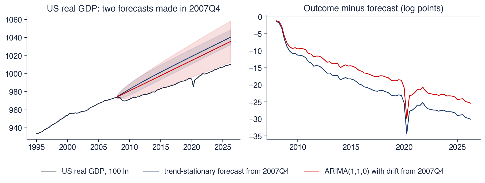

Academia de Studii Economice din București IDA Institute Digital Assets Blockchain Research Center AI4EFin Artificial Intelligence for Energy Finance Academia Română, Institutul de Prognoză Economică MSCA Digital Finance
KPSS: Kwiatkowski–Phillips–Schmidt–Shin (test) — testul de staționaritate Kwiatkowski–Phillips–Schmidt–Shin
MA: Moving Average (medie mobilă)
MAIC: Modified Akaike Information Criterion (criteriul informațional Akaike modificat)
OLS: Ordinary Least Squares (metoda celor mai mici pătrate)
PACF: Partial AutoCorrelation Function (funcția de autocorelație parțială)
PIB: Produsul intern brut
PNB: Produsul național brut
PP: Phillips–Perron (test) — testul Phillips–Perron de rădăcină unitară
RMSE: Root Mean Squared Error (rădăcina erorii pătratice medii)
SARIMA: Seasonal ARIMA (model) — model ARIMA sezonier
SE: Standard Error (eroare standard)
SUA: Statele Unite ale Americii
TBATS: Trigonometric seasonality, Box–Cox, ARMA errors, Trend, Seasonal components (model) — model cu sezonalitate trigonometrică, transformare Box–Cox, erori ARMA, trend și componente sezoniere
Capitolul pornește de la o întrebare despre șocuri: cînd o serie urcă în timp, efectul unui șoc de azi se stinge sau rămîne permanent? Răspunsul fixează tratamentul seriei, eliminarea trendului sau diferențierea, și lățimea intervalelor de prognoză pe orizonturi lungi. Traseul are trei etape. Prima definește cele două tipuri de trend, procesele integrate \(I(d)\) și regresia falsă. A doua prezintă testele de rădăcină unitară, Dickey–Fuller, ADF și Phillips–Perron, testul de staționaritate KPSS și efectul rupturilor structurale. A treia construiește modelele ARIMA\((p,d,q)\): identificare, estimare, diagnosticare și prognoză.
Capitolul folosește noțiunile din Capitolul 1, staționaritatea, mersul aleator și operatorul de diferențiere, și modelele ARMA din Capitolul 2. Seminarul 3 precede cursul și introduce aceleași teste pe exemple scurte.
Pe scurt
Întrebarea: cînd o serie urcă în timp, este șocul de azi temporar sau permanent și cum trebuie prognozată seria?
răspunsul decide dacă eliminăm trendul sau diferențiem seria și cît de largi sînt intervalele de prognoză
Traseul capitolului
trend determinist și trend stochastic; procese integrate \(I(d)\); regresia falsă
teste de rădăcină unitară: Dickey–Fuller, ADF, Phillips–Perron; testul de staționaritate KPSS; rupturi structurale
modele ARIMA\((p,d,q)\): identificare, estimare, diagnosticare, prognoze cu intervale tot mai largi
Pornim de la Capitolul 1 (staționaritate, mers aleator, diferențiere) și de la Capitolul 2 (modele ARMA); Seminarul 3 are loc înaintea acestui curs
Manualul de bază este Huang și Petukhina (2022), capitolele 4 și 5, despre modelele ARIMA și nestaționaritate. Manualul însoțitor, Hyndman și Athanasopoulos (2021), gratuit online, tratează modelele ARIMA în capitolul 9, cu accent pe prognoză și pe selecția automată. Pentru teoria asimptotică a rădăcinilor unitare, referința este Hamilton (1994), capitolele 15–17, iar metodologia ARIMA este expusă de Box, Jenkins și Reinsel (2008).
Testele ADF, KPSS și Zivot–Andrews și estimarea modelelor ARIMA sînt disponibile în biblioteca Python statsmodels; testul Phillips–Perron se poate scrie direct din formula lui, prezentată în secțiunea 4. Notebook-ul cursului reproduce graficele și tabelele capitolului.
Majoritatea seriilor macroeconomice și financiare urcă în timp: produsul intern brut (PIB) real, nivelul prețurilor, cursul de schimb, indicii bursieri. Media lor nu este constantă, deci instrumentele staționare din capitolele anterioare nu li se aplică direct. Întrebarea capitolului este ce fel de trend au aceste serii. Dacă trendul este o dreaptă fixă, un șoc îndepărtează seria de dreaptă doar temporar. Dacă trendul este stochastic, fiecare șoc rămîne pentru totdeauna în nivelul seriei. Cele două cazuri cer tratamente diferite: în primul se elimină trendul, în al doilea se diferențiază seria.
Diferența are consecințe practice directe. Un model staționar în jurul trendului, estimat pe PIB-ul real al SUA pînă în T4 2007, aștepta revenirea producției la dreapta de dinainte de criză. Revenirea nu a avut loc: în T2 2026, PIB-ul observat era cu circa 30 de puncte logaritmice sub această prognoză, iar semilățimea intervalului de 95% era de doar 8 puncte. Modelul staționar în diferențe greșește și el, cu circa 25 de puncte, dar intervalul lui, cu semilățimea 23, arată măcar că incertitudinea este mare. Tot natura trendului decide dacă o regresie între două serii cu trend are sens: întrebarea lui Yule (1926) din motto privește exact corelațiile obținute între serii care evoluează ca sume de șocuri.
Capitolul tratează întîi diferența dintre cele două tipuri de trend și regresia falsă. Urmează testele care decid între ele, Dickey–Fuller augmentat (ADF), Phillips–Perron (PP) și KPSS, cu limitele lor în eșantioane scurte și în prezența rupturilor structurale. Ultima parte construiește modelele ARIMA\((p,d,q)\), care adaugă diferențierea la modelele ARMA din Capitolul 2, și le folosește pentru prognoză pe PIB-ul României, pe inflație și pe cursul EUR/RON.

PIB-ul real al SUA (100 ln) și două prognoze făcute în T4 2007: un model staționar în jurul trendului (trend liniar cu erori AR(2)) și un model staționar în diferențe (ARIMA(1,1,0) cu derivă), cu intervalele de 95%; în dreapta, diferența dintre valoarea observată și prognoză, în puncte logaritmice.
Ce veți putea face
Deosebiți seriile staționare în jurul trendului de cele staționare în diferențe și explicați efectul unui șoc în fiecare caz.
Recunoașteți o regresie falsă după \(t\),\(R^2\) și statistica Durbin–Watson și explicați de ce apare.
Aplicați testele ADF, Phillips–Perron și KPSS cu termenii determiniști și numărul de laguri potrivite și interpretați-le împreună.
Explicați cum poate o ruptură structurală să imite o rădăcină unitară și cum o caută testul Zivot–Andrews.
Identificați, estimați și verificați un model ARIMA\((p,d,q)\) și derivați lățimea intervalelor lui de prognoză.
Evaluați critic rezultatul unei selecții automate ARIMA.
RezumatIdeile și formulele de reținut și autoevaluarea.
Trend determinist și trend stochastic
O serie cu trend poate fi descrisă în două feluri. Primul este o dreaptă fixă plus abateri staționare de la ea: un trend determinist (deterministic trend). Al doilea este o sumă cumulată de șocuri, eventual cu o derivă: un trend stochastic (stochastic trend). Pe un grafic, cele două arată aproape la fel; diferă însă efectul unui șoc, varianța pe termen lung și tratamentul corect. Secțiunea definește cele două modele, procesele integrate și rădăcina unitară, apoi arată ce se întîmplă cînd unei serii i se aplică tratamentul greșit.
Întrebare pentru sală Butonul ▶ mută sfîrșitul eșantionului pe care se estimează dreptele întrerupte din toate cele patru panouri. Unde se află PIB-ul din T2 2026 față de o dreaptă estimată pe datele de pînă în T3 2008?
Răspuns
Mult sub ea: dreapta estimată pînă în T3 2008 are panta 1,56% pe trimestru, iar PIB-ul din T2 2026 este cu 76 de puncte logaritmice (100 × diferența logaritmilor) sub prelungirea ei. Pe tot eșantionul panta este 0,80% pe trimestru (circa 3,2% pe an), iar cea mai mare abatere, 17,5 puncte logaritmice, apare în T3 2008. După recesiunea din 2009, PIB-ul nu a revenit la dreapta de dinainte: un argument pentru un trend stochastic, nu pentru o dreaptă fixă plus zgomot.
Graficul reunește patru serii românești și internaționale observate din 2000. Sus în stînga este logaritmul PIB-ului real trimestrial al României, ajustat sezonier, împreună cu dreapta ajustată prin metoda celor mai mici pătrate. Sus în dreapta este logaritmul indicelui armonizat al prețurilor de consum (IAPC), lunar, cu baza 2015 = 100. Jos în stînga este cursul zilnic EUR/RON, cursul de referință al Băncii Naționale a României (BNR), din iulie 2005. Jos în dreapta sînt logaritmii prețurilor zilnice ale indicilor BET și S&P 500, fiecare minus valoarea lui din 2000, ca să pornească de la zero.
Niciuna dintre serii nu fluctuează în jurul unei medii constante. În termenii din Capitolul 1, toate sînt nestaționare: media lor depinde de timp. Diferă însă forma creșterii. PIB-ul urmează o dreaptă de care se abate în episoade lungi, IAPC crește repede la început și mai lent după 2005, cursul de schimb are salturi rare urmate de perioade de stabilitate, iar BET-ul are o prăbușire în 2008–2009 urmată de o revenire lentă.
Pe scurt
PIB-ul real (Eurostat, ajustat sezonier) și IAPC ale României (Eurostat); cursul EUR/RON, cursul de referință BNR; logaritmii prețurilor BET și S&P 500, zilnic din 2000
Niciuna nu are o medie constantă: în Capitolul 1 le-am numit nestaționare
Cifrele dau ordinul de mărime al trendurilor. PIB-ul real crește în medie cu 0,80% pe trimestru, circa 3,2% pe an, dar se abate de la dreapta ajustată cu pînă la 18%. Prețurile de consum s-au multiplicat de 7,2 ori din 2000. Cursul EUR/RON a urcat de la 3,60 la 5,26 lei. Logaritmul BET a crescut cu 426 de puncte logaritmice (adică \(100\Delta\ln\)), iar cel al S&P 500 cu 166 de puncte, pînă la 18 septembrie 2026.
Recesiunea din 2009 ilustrează întrebarea capitolului. După scădere, PIB-ul României a crescut din nou, dar nu este clar dacă a revenit la vechea dreaptă sau a pornit pe una nouă, paralelă și mai jos. Prima variantă corespunde unui șoc temporar, a doua unui șoc permanent.
Două modele pot produce asemenea grafice. Primul este o dreaptă fixă plus zgomot staționar, adică un trend determinist. Al doilea este un mers aleator cu derivă (random walk with drift), adică un trend stochastic. Următoarele două cadre le definesc formal și le compară proprietățile.
Pe scurt
PIB-ul crește în medie cu 0,80% pe trimestru (circa 3,2% pe an), dar se abate de la dreaptă cu pînă la 18%
recesiunea din 2009: a revenit PIB-ul la vechea dreaptă sau a pornit pe una nouă?
Prețurile de consum: \(\times\)7,2 din 2000; EUR/RON: de la 3,60 la 5,26 lei; BET: \(+426\) puncte logaritmice, S&P 500: \(+166\) puncte logaritmice (pînă la 18 septembrie 2026)
Două modele pot produce asemenea grafice
o dreaptă fixă plus zgomot staționar (trend determinist)
În (3.1),\(\alpha\) este termenul liber, \(\beta\) panta, adică variația medie pe perioadă, iar \(u_t\) un proces staționar, de exemplu un AR(1) \(u_t = \phi u_{t-1} + \varepsilon_t\) cu \(|\phi| < 1\) (Capitolul 2). Media \(E[y_t] = \alpha + \beta t\) depinde de timp, deci \(y_t\) nu este staționar, dar varianța \(\mathrm{Var}(y_t) = \mathrm{Var}(u_t)\) este constantă, iar \(y_t - \alpha - \beta t\) este staționar.
Un șoc \(\varepsilon_t\) deplasează seria față de dreaptă doar temporar. Cu erori AR(1), efectul lui după \(h\) perioade este \(\phi^h\), care tinde geometric la zero. De aceea prognozele pe termen lung revin la dreapta \(\alpha + \beta(T+h)\), iar varianța erorii de prognoză converge la \(\mathrm{Var}(u_t)\): intervalele de prognoză au o lățime mărginită. Tratamentul corect este estimarea trendului prin metoda celor mai mici pătrate (OLS, ordinary least squares) și modelarea reziduurilor ca proces ARMA.
Pe scurt
Definiție: \(y_t = \alpha + \beta t + u_t\), unde \(u_t\) este un proces staționar (de exemplu un AR(1) staționar, Capitolul 2)
\(\alpha\): termenul liber; \(\beta\): panta, adică variația medie pe perioadă; \(t\): indicele de timp
\(y_t\) este staționar în jurul trendului: staționar după ce scădem dreapta \(\alpha + \beta t\)
Aici \(\beta\) este deriva (drift), variația medie pe perioadă. Prin substituții succesive, \(y_t = y_0 + \beta t + \sum_{i=1}^{t} u_i\), unde \(y_0\) este valoarea inițială. Seria are două componente de trend: termenul determinist \(\beta t\), provenit din derivă, și suma cumulată a șocurilor \(\sum_{i \le t} u_i\), numită trend stochastic.
Media este aceeași ca în (3.1),\(y_0 + \beta t\), dar varianța crește cu timpul: pentru un mers aleator, cu \(u_t\) zgomot alb (white noise) de varianță \(\sigma^2\),\(\mathrm{Var}(y_t) = t\sigma^2\) (Capitolul 1). Fiecare șoc intră în suma cumulată și rămîne în nivel pentru totdeauna; nu există o dreaptă la care seria să revină. În consecință, intervalele de prognoză se lărgesc fără limită odată cu orizontul. Tratamentul corect este diferențierea seriei și modelarea lui \(\Delta y_t\) ca ARMA, adică modelul ARIMA din secțiunea 6.
\(\beta\): deriva, adică variația medie pe perioadă; \(y_0\): valoarea inițială
\(y_t\) este staționar în diferențe: \(\Delta y_t = \beta + u_t\) este staționar
\(\sum_{i \le t} u_i\) este trendul stochastic; \(\beta t\) provine din derivă
Proprietăți
aceeași medie \(y_0 + \beta t\) ca la o serie staționară în jurul trendului, dar \(\mathrm{Var}(y_t)\) crește cu \(t\) (Capitolul 1: \(t\sigma^2\) pentru un mers aleator)
fiecare șoc rămîne pentru totdeauna în nivel: nu există o dreaptă la care seria să revină
intervalele de prognoză se lărgesc fără limită pe măsură ce orizontul crește
Tratamentul corect: diferențiem seria și modelăm \(\Delta y_t\) ca ARMA: modelul ARIMA din acest capitol
Întrebare pentru sală Butonul ▶ crește φ de la 0 la 1. Ce rămîne, la sfîrșitul eșantionului, din șocul de +6 în seria staționară în jurul trendului?
Răspuns
Pentru φ < 1, aproape nimic: 6φ⁹⁹ este 1,5 · 10⁻⁹ la φ = 0,8 și 0,04 la φ = 0,95; abia la φ = 0,99 rămîn 2,2. La φ = 1 rămîne întregul șoc, 6, ca la mersul aleator: zgomotul AR(1) devine el însuși un mers aleator, iar cele două modele coincid. Cu φ = 0,8, efectul unui șoc unitar este 0,107 după 10 perioade, iar timpul de înjumătățire este 3,1 perioade.
Simularea compară cele două modele cu aceleași șocuri și aceeași pantă, 0,2 pe perioadă. În panoul din stînga, seria staționară în jurul trendului are erori AR(1) cu \(\phi = 0{,}8\). În panoul din mijloc, seria este un mers aleator cu deriva 0,2. Liniile albastre sînt traiectoriile fără șoc suplimentar, iar cele roșii adaugă un șoc de \(+6\) la \(t = 100\); linia punctată este dreapta \(0{,}2t\).
Panoul din dreapta rezumă diferența printr-o funcție de răspuns la impuls: efectul unui șoc unitar după \(h\) perioade. Pentru seria staționară în jurul trendului, efectul este \(\phi^h = 0{,}8^h\), curba verde care scade spre zero. Pentru mersul aleator, efectul este 1 la orice orizont, linia orizontală violet.
Pe scurt
Stînga și centru: aceleași șocuri generează o serie staționară în jurul trendului (\(u_t\) AR(1), \(\phi = 0{,}8\)) și un mers aleator cu deriva 0,2; traiectoriile roșii adaugă un șoc de \(+6\) la \(t = 100\)
Dreapta: efectul unui șoc unitar după \(h\) perioade
La seria staționară în jurul trendului, șocul se stinge: efectul lui este \(0{,}8^{10} = 0{,}107\) după 10 perioade și \(0{,}8^{20} = 0{,}012\) după 20. La \(t = 200\), traiectoriile roșie și albastră coincid. Seria a uitat șocul, iar abaterea de la dreaptă depinde din nou doar de șocurile recente.
La mersul aleator, întreaga traiectorie de după \(t = 100\) se deplasează în sus cu 6 și rămîne acolo. Interpretarea economică este directă. Dacă PIB-ul este staționar în jurul trendului, o recesiune este o scădere temporară sub trend, urmată de recuperare. Dacă PIB-ul este staționar în diferențe, recesiunea este o pierdere permanentă de producție: nivelul viitor este mai mic pentru totdeauna.
Fără șocul suplimentar, cele două traiectorii albastre arată foarte asemănător: ambele urcă în jurul aceleiași drepte, cu abateri lungi. Ochiul liber nu le poate deosebi, iar această dificultate motivează testele formale din secțiunile 3 și 4.
Pe scurt
Seria staționară în jurul trendului: șocul se stinge; efectul lui este \(0{,}8^{10} = 0{,}107\) după 10 perioade și \(0{,}012\) după 20
la \(t = 200\) traiectoriile roșie și albastră coincid
Mersul aleator: întreaga traiectorie urcă cu 6 și rămîne acolo
o recesiune într-o economie de tip staționar în diferențe este o pierdere permanentă de producție, nu o scădere temporară sub trend
Cu ochiul liber, cele două serii fără șoc arată la fel: avem nevoie de un test formal (secțiunile 3–4)
Noțiunea care generalizează seria staționară în diferențe este ordinul de integrare. Un proces \(y_t\) este integrat de ordinul \(d\) (integrated of order d), notat \(y_t \sim I(d)\), dacă \(\Delta^d y_t\) este staționar, iar \(\Delta^{d-1} y_t\) nu este. Un proces \(I(0)\) este staționar, cu o reprezentare ARMA inversabilă (Capitolul 2); un proces \(I(1)\) devine staționar după o diferențiere, iar unul \(I(2)\) după două. A doua diferență se scrie \(\Delta^2 y_t = \Delta y_t - \Delta y_{t-1} = y_t - 2y_{t-1} + y_{t-2}\).
În economie și finanțe, ordinele tipice sînt cunoscute. Logaritmii prețurilor acțiunilor, cursurile de schimb și logaritmul PIB-ului sînt de regulă \(I(1)\), iar randamentele și ratele de creștere, care sînt diferențele lor, sînt \(I(0)\). Nivelul prețurilor în perioade cu inflație ridicată poate fi \(I(2)\); atunci inflația, diferența logaritmului prețurilor, este ea însăși \(I(1)\).
Două reguli simple ajută la clasificare. Suma unui proces \(I(0)\) și a unuia \(I(1)\) este \(I(1)\): trendul stochastic domină componenta staționară. A doua regulă privește seriile staționare în jurul trendului: ele devin \(I(0)\) după eliminarea trendului, nu după diferențiere, iar secțiunea 6 arată ce se întîmplă dacă sînt totuși diferențiate.
Pe scurt
Definiție: \(y_t\) este integrat de ordinul \(d\), \(y_t \sim I(d)\), dacă \(\Delta^d y_t\) este staționar, iar \(\Delta^{d-1}y_t\) nu este
\(I(0)\): staționar (cu o reprezentare ARMA inversabilă, Capitolul 2); \(I(1)\): staționar după o diferențiere; \(I(2)\): după două
Ordinul de integrare are o caracterizare algebrică prin polinomul autoregresiv. Un AR(\(p\)) se scrie cu operatorul lag (lag operator) \(L\),\(Ly_t = y_{t-1}\), ca \(\phi(L)y_t = \varepsilon_t\), unde \(\phi(z) = 1 - \phi_1 z - \dots - \phi_p z^p\). Din Capitolul 2, procesul este staționar dacă toate rădăcinile ecuației \(\phi(z) = 0\) sînt în afara cercului unitate (unit circle), \(|z| > 1\).
O rădăcină unitară (unit root) înseamnă că \(z = 1\) este rădăcină a lui \(\phi\). Polinomul se factorizează atunci ca \(\phi(z) = (1 - z)\phi^*(z)\), iar dacă rădăcinile lui \(\phi^*\) sînt în afara cercului, \(\phi^*(L)(1 - L)y_t = \phi^*(L)\Delta y_t = \varepsilon_t\). Diferența \(\Delta y_t\) este un AR(\(p-1\)) staționar, deci \(y_t \sim I(1)\). Pentru AR(1), \(\phi(z) = 1 - \phi z\) are rădăcina \(1/\phi\), care este unitară exact cînd \(\phi = 1\): mersul aleator.
Exemplul de pe slide arată factorizarea. Pentru \(y_t = 1{,}5y_{t-1} - 0{,}5y_{t-2} + \varepsilon_t\), polinomul este \(1 - 1{,}5z + 0{,}5z^2 = (1 - z)(1 - 0{,}5z)\), cu rădăcinile 1 și 2. Prima este unitară, a doua este în afara cercului, deci \(\Delta y_t = 0{,}5\Delta y_{t-1} + \varepsilon_t\): un AR(1) staționar în diferențe. Coeficienții nivelurilor, 1,5 și \(-0{,}5\), însumează exact 1, iar aceasta este condiția \(\phi(1) = 0\), folosită de testele din secțiunea 3.
Pe scurt
Scriem un AR(\(p\)) cu operatorul lag \(L\) (Capitolul 1): \(\phi(L)y_t = \varepsilon_t\), \(\phi(z) = 1 - \phi_1 z - \dots - \phi_p z^p\)
Capitolul 2: staționar dacă toate rădăcinile ecuației \(\phi(z) = 0\) sînt în afara cercului unitate, \(|z| > 1\)
Rădăcină unitară: o rădăcină este \(z = 1\), deci \(\phi(z) = (1 - z)\,\phi^*(z)\), iar rădăcinile lui \(\phi^*\) sînt în afara cercului
atunci \(\phi^*(L)\,\Delta y_t = \varepsilon_t\): \(\Delta y_t\) este un AR(\(p-1\)) staționar, iar \(y_t \sim I(1)\)
Pînă la începutul anilor 1980, modelele ciclului economic presupuneau de regulă că seriile macroeconomice sînt staționare în jurul unui trend: ciclul era abaterea temporară de la o dreaptă. Nelson și Plosser (1982) au pus această ipoteză la încercare pe 14 serii anuale lungi ale SUA, unele începînd din 1860: produsul național brut (PNB) real, ocuparea, prețurile, salariile, ratele dobînzii și prețurile acțiunilor.
Metoda a fost testul Dickey–Fuller din secțiunea 3, în varianta cu constantă și trend, care are ca alternativă exact staționaritatea în jurul trendului. Rădăcina unitară a fost respinsă pentru o singură serie, rata șomajului. Pentru celelalte 13, datele nu au permis respingerea unui trend stochastic.
Concluzia lor, că șocurile asupra producției par permanente, a deschis o dezbatere amplă despre natura recesiunilor. A adus și un avertisment metodologic: eliminarea trendului printr-o dreaptă dintr-o serie staționară în diferențe produce artefacte, ilustrate în cadrul următor. Rezultatul a fost contestat ulterior de Perron (1989), care a arătat că rupturile structurale pot imita o rădăcină unitară (secțiunea 5).
Pe scurt
Întrebarea: sînt seriile macroeconomice ale SUA staționare în jurul unui trend, cum presupuneau modelele ciclului economic din anii 1970?
Nelson și Plosser (1982): 14 serii anuale lungi (PNB real, ocuparea, prețurile, salariile, ratele dobînzii, prețurile acțiunilor), unele din 1860
Metoda: testul Dickey–Fuller din secțiunea 3, cu constantă și trend
rădăcina unitară a fost respinsă pentru o singură serie, rata șomajului
Consecința: șocurile asupra producției par permanente, nu temporare
o dezbatere amplă despre natura recesiunilor și un avertisment împotriva eliminării trendului printr-o dreaptă (slide-ul următor)
concluzia a fost contestată ulterior prin rupturi structurale (secțiunea 5)
Întrebare pentru sală Panta adevărată a mersului aleator este 0. Pe 2 000 de mersuri aleatoare cu T = 200, cît de des respinge testul t ipoteza „panta este 0” la 5%?
Răspuns
În 90,4% din cazuri, nu în 5%; R² median este 0,44. Pe traiectoria din slide, R² = 0,61 și t = −17,7. Reziduurile au ρ̂(1) = 0,96 și rămîn pozitiv autocorelate pînă la lagul 36: cicluri lungi create de eliminarea trendului (Nelson și Kang). Cu T = 50, testul respinge tot în 82,0% din cazuri: eroarea nu dispare cu un eșantion mai scurt sau mai lung.
Experimentul aplică tratamentul pentru trend determinist unei serii care nu are un asemenea trend. Panoul din stînga arată un mers aleator fără derivă, cu \(T = 200\) observații, și dreapta OLS \(\hat a + \hat b t\) ajustată pe el. Panoul din mijloc arată reziduurile, adică seria „fără trend”, iar panoul din dreapta funcția de autocorelație (ACF, autocorrelation function) a reziduurilor, cu banda \(\pm 1{,}96/\sqrt{T}\).
Mersul aleator nu are pantă adevărată: deriva este zero. Orice dreaptă ajustată descrie deci doar direcția în care s-a deplasat întîmplător această traiectorie, aici în jos. Reziduurile par să urmeze cicluri lungi și regulate, deși seria nu conține niciun ciclu.
Pe scurt
Stînga: un mers aleator fără derivă (\(T = 200\)) și dreapta OLS \(\hat a + \hat b t\); centru: reziduurile; dreapta: ACF a reziduurilor
Regresia pe trend pare foarte reușită. Coeficientul de determinare este \(R^2 = 0{,}61\), iar statistica \(t\) a pantei este \(-17{,}7\), deși panta adevărată este 0. Rezultatul nu este o întîmplare a acestei traiectorii: pe 2 000 de mersuri aleatoare simulate cu \(T = 200\),\(|t| > 1{,}96\) apare în 90% din cazuri, iar \(R^2\) median este 0,44. Testul \(t\) obișnuit presupune erori staționare, iar aici reziduurile moștenesc trendul stochastic.
Reziduurile au autocorelația de ordinul 1 \(\hat\rho(1) = 0{,}96\) și o ACF care descrește lent. Arată ca un ciclu economic, dar sînt un artefact al metodei. Nelson și Kang (1981) au descris fenomenul: eliminarea trendului dintr-o serie staționară în diferențe creează cicluri false (spurious cycles), a căror lungime depinde de lungimea eșantionului, nu de economie.
Eroarea inversă este diferențierea unei serii staționare în jurul trendului. Ea se numește supradiferențiere (over-differencing), a fost introdusă în Capitolul 1 și este tratată în secțiunea 6 pe PIB-ul României.
Pe scurt
Dreapta se potrivește: \(R^2 = 0{,}61\), \(t = \ensuremath{-}17{,}7\) pentru pantă, deși panta adevărată este 0
pe 2 000 de mersuri aleatoare: \(|t| > 1{,}96\) în 90% din cazuri, \(R^2\) median \(= 0{,}44\)
Reziduurile par cicluri lungi: \(\hat\rho(1) = 0{,}96\) și o descreștere lentă
Nelson și Kang (1981): eliminarea trendului dintr-o serie staționară în diferențe creează cicluri false; un ciclu economic poate fi un artefact al metodei
Eroarea inversă (diferențierea unei serii staționare în jurul trendului) este supradiferențierea (Capitolul 1 și secțiunea 6)
Recapitulare: trend determinist și trend stochastic
Cele două modele de trend diferă prin memoria șocurilor. Într-o serie staționară în jurul trendului, (3.1), șocurile se sting, iar prognozele revin la dreaptă. Într-o serie staționară în diferențe, (3.2), șocurile sînt permanente, iar varianța crește cu timpul. Ordinul de integrare \(I(d)\) numără diferențierile necesare pentru staționaritate, iar o rădăcină unitară a polinomului \(\phi(z)\) înseamnă \(I(1)\).
Tratamentul greșit creează artefacte în ambele direcții. Eliminarea trendului dintr-o serie staționară în diferențe produce cicluri false și statistici \(t\) înșelătoare. Diferențierea unei serii staționare în jurul trendului produce supradiferențiere. De aceea alegerea dintre cele două tratamente cere un test, nu o inspecție vizuală.
Pe scurt
Staționară în jurul trendului: \(y_t = \alpha + \beta t + u_t\), șocurile se sting; staționară în diferențe: \(\Delta y_t = \beta + u_t\), șocurile sînt permanente
\(I(d)\): staționar după \(d\) diferențieri; o rădăcină unitară a lui \(\phi(z)\) înseamnă \(I(1)\)
Tratamentul greșit creează artefacte: cicluri false (eliminarea trendului dintr-o serie staționară în diferențe) sau supradiferențiere (diferențierea unei serii staționare în jurul trendului)
Sinteza secțiunii
Seriile cu trend din economie pot fi staționare în jurul unei drepte sau pot conține un trend stochastic; în al doilea caz, fiecare șoc rămîne în nivel, iar varianța crește cu timpul. Distincția se exprimă algebric printr-o rădăcină unitară a polinomului AR și decide tratamentul: eliminarea trendului sau diferențierea. Simulările arată că cele două modele nu se deosebesc vizual și că tratamentul greșit produce cicluri și pante false. Secțiunea următoare extinde problema la regresiile între două serii cu trend stochastic.
Regresia falsă
Problema din secțiunea precedentă, o regresie pe timp care pare semnificativă deși nu există nicio pantă, apare și cînd o serie \(I(1)\) este regresată pe o altă serie \(I(1)\), independentă de ea. Fenomenul se numește regresie falsă (spurious regression). Secțiunea urmărește istoria lui, de la Yule (1926) la Granger și Newbold (1974), îl reproduce prin simulare, explică de ce eșuează testul \(t\) și îl ilustrează pe date reale românești și americane.
Primul care a pus problema sistematic a fost statisticianul britanic George Udny Yule. Lucrarea lui Yule (1926) începe cu întrebarea din titlu: de ce obținem uneori corelații fără sens (nonsense correlations) între serii de timp? Exemplul lui: în Anglia și Țara Galilor, între 1866 și 1911, ponderea căsătoriilor oficiate de Biserica Angliei și rata mortalității aveau o corelație de circa 0,95. Nu există nicio legătură cauzală între ele; ambele serii au scăzut în acea perioadă.
Explicația lui Yule anticipează teoria modernă. Pentru serii care evoluează ca sume cumulate de termeni aleatori, corelația de selecție nu se concentrează în jurul lui 0, chiar dacă seriile sînt independente. Valorile mari apar des din întîmplare, iar eroarea standard obișnuită a coeficientului de corelație, construită pentru observații independente, nu se aplică.
Problema a reapărut cincizeci de ani mai tîrziu, în modelele econometrice estimate pe nivelurile unor serii macroeconomice cu trend. Cadrul următor descrie redescoperirea ei.
Pe scurt
Yule (1926) a întrebat: Why do we sometimes get nonsense-correlations between time-series? (De ce obținem uneori corelații fără sens între serii de timp?)
exemplul lui: în Anglia și Țara Galilor, 1866–1911, ponderea căsătoriilor oficiate de Biserica Angliei și rata mortalității aveau o corelație de circa 0,95
nicio legătură cauzală: ambele serii au scăzut în perioada respectivă
Explicația lui: pentru seriile care evoluează ca sumele de termeni aleatori, corelația de selecție nu se stabilizează în jurul lui 0
valorile mari apar des din întîmplare; eroarea standard obișnuită nu se aplică
Cincizeci de ani mai tîrziu, aceeași problemă a reapărut în modelele econometrice estimate pe niveluri
Granger și Newbold (1974) au studiat prin simulare regresia unui mers aleator pe un alt mers aleator, independent de primul: \(y_t = a + bx_t + e_t\), cu \(y_t\) și \(x_t\) serii \(I(1)\) independente. Valoarea adevărată a pantei este \(b = 0\). Testul \(t\) pentru \(b = 0\) a respins totuși mult prea des, coeficientul \(R^2\) a fost frecvent mare, iar statistica Durbin–Watson (DW) a fost apropiată de 0.
Statistica Durbin–Watson măsoară autocorelația de ordinul 1 a reziduurilor: \(\mathrm{DW} \approx 2(1 - \hat\rho_1)\). O valoare apropiată de 2 indică reziduuri necorelate, iar o valoare apropiată de 0 indică reziduuri foarte persistente, de tip \(I(1)\). De aici regula practică a autorilor: o regresie trebuie suspectată ca falsă cînd \(R^2 > \mathrm{DW}\), adică atunci cînd potrivirea aparentă este mai mare decît semnalul de autocorelație din reziduuri.
Clive Granger și Paul Newbold lucrau atunci la Universitatea din Nottingham. Granger a primit în 2003 Premiul Nobel pentru economie, pentru metodele de analiză a seriilor cu trenduri comune, cointegrarea, tratată în Capitolul 7.
Întrebare pentru sală În niveluri, testul t respinge b = 0 în 83,6% din eșantioane pentru T = 200. Ce se întîmplă cu rata de respingere cînd T crește la 1 000?
Răspuns
Crește, la 92,3%: |t| median urcă de la 6,3 la 14,2, aproximativ ca √T; R² median rămîne în jur de 0,17, iar DW median scade la 0,015. Mai multe date nu corectează o regresie falsă. În diferențe, rata rămîne aproape de nivelul nominal: 4,65% la T = 200 și 4,5% la T = 1 000.
Simularea reproduce experimentul lui Granger și Newbold. Pentru fiecare lungime a eșantionului \(T\) se generează 2 000 de perechi de mersuri aleatoare gaussiene independente, iar \(y\) este regresat prin OLS pe o constantă și pe \(x\), o dată în niveluri și o dată în diferențe. Panoul din stînga arată proporția eșantioanelor cu \(|t| > 1{,}96\), adică frecvența respingerii ipotezei adevărate \(b = 0\) la nivelul nominal de 5%; axa orizontală, logaritmică, dă \(T\).
Panoul din dreapta arată histograma statisticii \(t\) pentru \(T = 200\), în niveluri (roșu) și în diferențe (albastru), față de densitatea \(N(0,1)\) (verde). Dacă testul ar funcționa, ambele histograme ar trebui să urmeze curba verde și să aibă 5% din masă dincolo de \(\pm 1{,}96\).
Pe scurt
2 000 de perechi de mersuri aleatoare gaussiene independente pentru fiecare \(T\); OLS a lui \(y\) pe o constantă și pe \(x\), în niveluri și în diferențe
Stînga: proporția eșantioanelor cu \(|t| > 1{,}96\); dreapta: distribuția lui \(t\) pentru \(T = 200\)
În niveluri, ipoteza adevărată \(b = 0\) este respinsă în 68% din eșantioane pentru \(T = 50\) și în 92% pentru \(T = 1000\). Mai multe date înrăutățesc situația: valoarea mediană a lui \(|t|\) crește de la 3,2 pentru \(T = 50\) la 14,2 pentru \(T = 1000\). Histograma roșie din dreapta este extrem de largă, cu valori ale lui \(t\) între circa \(-30\) și \(30\). Coeficientul \(R^2\) median rămîne în jur de 0,17 pentru orice \(T\), iar statistica DW mediană este 0,08 la \(T = 200\), deci regula \(R^2 > \mathrm{DW}\) semnalează corect problema.
În diferențe, proporția respingerilor este 4,7% la \(T = 200\), aproape de nivelul nominal de 5%, iar histograma albastră urmează densitatea \(N(0,1)\). Testul \(t\) funcționează din nou, deoarece \(\Delta y_t\) și \(\Delta x_t\) sînt zgomote albe independente și ipotezele OLS sînt îndeplinite.
Pe scurt
Niveluri: ipoteza adevărată \(b = 0\) este respinsă în 68% din eșantioane cu \(T = 50\) și în 92% cu \(T = 1000\)
mai multe date înrăutățesc situația: \(|t|\) median crește de la 3,2 (\(T = 50\)) la 14,2 (\(T = 1000\))
\(R^2\) median de circa 0,17 pentru orice \(T\); DW median 0,08 la \(T = 200\)
Diferențe: 4,7% la \(T = 200\), aproape de nivelul nominal de 5%
testul \(t\) funcționează din nou, deoarece \(\Delta y_t\) și \(\Delta x_t\) sînt staționare
Explicația este în termenul de eroare. Dacă \(b = 0\), eroarea regresiei este \(e_t = y_t - a\), adică un mers aleator. Ipotezele OLS, erori staționare și necorelate, nu sînt îndeplinite: reziduurile sînt puternic autocorelate, iar eroarea standard obișnuită, calculată ca și cum ar fi independente, este mult prea mică. Raportul \(t\) este deci mult prea mare.
Phillips (1986) a dedus comportamentul exact în eșantioane mari, folosind teoria asimptotică pentru procese integrate. Estimatorul \(\hat b\) nu converge la 0, ci la o variabilă aleatoare: fiecare eșantion produce o pantă diferită, oricît de lung ar fi. Statistica \(t_{\hat b}\) crește ca \(\sqrt{T}\), deci rata de respingere tinde la 100%. Coeficientul \(R^2\) are o distribuție limită nedegenerată, ceea ce explică valoarea mediană stabilă de circa 0,17 din simulare, iar \(\mathrm{DW} \to 0\).
Există o excepție importantă. Dacă \(y_t - bx_t\) este staționar pentru un anumit \(b\), seriile au un trend stochastic comun și se numesc cointegrate; atunci regresia în niveluri are sens, iar \(\hat b\) estimează relația de echilibru (Engle și Granger, 1987). Cointegrarea este subiectul Capitolului 7.
Pe scurt
În ipoteza \(b = 0\), eroarea \(e_t = y_t - a\) este ea însăși un mers aleator: ipotezele OLS (erori staționare, necorelate) nu sînt îndeplinite
\(\hat b\) nu converge la 0: converge la o variabilă aleatoare
\(t_{\hat b}\) crește ca \(\sqrt{T}\), deci rata de respingere tinde la 100%
\(R^2\) are o distribuție limită nedegenerată; \(\mathrm{DW} \to 0\)
Excepția: dacă \(y_t - b x_t\) este staționar pentru un anumit \(b\), seriile sînt cointegrate, iar regresia în niveluri are sens Engle și Granger (1987) (Capitolul 7)
Întrebare pentru sală În niveluri, regresia IAPC pe S&P 500 are t = 34,6 și R² = 0,82. Este R² o informație nouă față de t?
Răspuns
Nu: cu o singură variabilă explicativă, R² = t²/(t² + n − 2) = 34,6²/(34,6² + 258) = 0,82. Ambele vin din aceeași eroare standard, prea mică pentru că eroarea este ea însăși un mers aleator; DW = 0,03 o arată. În diferențe lunare, t = −0,21 (p = 0,83) și R² = 0,0002: inflația lunară și randamentele bursiere nu sînt legate.
Întrebare pentru sală Pe 2005–2026, regresia IAPC pe S&P 500 în niveluri dă t = 34,6 și R² = 0,82. Rămîne legătura dacă folosim doar 2005–2012?
Răspuns
Nu: pe 2005–2012, t = −0,72 și R² sub 0,01 în niveluri; pe 2013–2026, t = 33,2 și R² = 0,87. În 2005–2012 acțiunile au scăzut și au revenit, în timp ce prețurile au crescut; după 2013 ambele cresc. În diferențe, pe tot eșantionul, t = −0,21 (p = 0,83) și R² = 0,0002. Regula lui Granger și Newbold semnalează problema: R² = 0,82 > DW = 0,03.
Exemplul real regresează IAPC al României (Eurostat) pe indicele S&P 500, la închiderea de la sfîrșitul lunii, pe 260 de luni începînd din ianuarie 2005. Ambele serii sînt transformate ca \(100\ln\), deci diferențele lor lunare sînt aproximativ variații procentuale. Panoul din stînga arată regresia în niveluri, cu dreapta OLS, iar panoul din dreapta regresia variațiilor lunare: inflația lunară pe variația lunară a lui \(100\ln\) S&P 500.
În niveluri, punctele formează benzi alungite, care corespund unor perioade succesive: ambele serii au crescut, cu ritmuri diferite. În diferențe, punctele formează un nor fără orientare în jurul unei drepte practic orizontale.
Pe scurt
IAPC al României (Eurostat) față de S&P 500 (închiderea de la sfîrșitul lunii), 260 de luni din ianuarie 2005, ambele ca \(100\ln\)
În niveluri, panta estimată este 0,39, cu statistica \(t = 34{,}6\),\(R^2 = 0{,}82\) și \(\mathrm{DW} = 0{,}03\). Citită naiv, regresia ar spune că acțiunile americane explică prețurile de consum din România. Regula lui Granger și Newbold, \(R^2 > \mathrm{DW}\), este însă satisfăcută cu mare diferență, iar reziduurile au o persistență extremă: aceasta este o regresie falsă tipică.
În diferențe, statistica \(t\) a pantei este \(-0{,}21\), cu p-value 0,83, iar \(R^2 = 0{,}0002\). Inflația lunară din România și randamentul lunar al indicelui S&P 500 nu au o legătură detectabilă prin această regresie.
Concluzia corectă este modestă: ambele niveluri conțin un trend, iar regresia în niveluri spune doar că ambele au crescut în aceeași perioadă. Ea nu spune nimic despre o relație economică între cele două serii.
Regresia unei serii \(I(1)\) pe o altă serie \(I(1)\) fără legătură cu ea produce un \(t\) mare, un \(R^2\) mare și o statistică DW apropiată de 0. Mai multe observații nu rezolvă problema, ci o agravează, pentru că \(t\) crește ca \(\sqrt{T}\).
Remediile decurg din diagnostic. Întîi se testează ordinul de integrare al fiecărei serii, cu testele din secțiunile 3 și 4. Dacă seriile sînt \(I(1)\), regresia se estimează pe diferențe, unde inferența obișnuită este valabilă. Alternativ, se testează cointegrarea (Capitolul 7), cazul în care regresia în niveluri are un sens economic.
Pe scurt
Regresia unei serii \(I(1)\) pe o altă serie \(I(1)\) fără legătură cu ea dă un \(t\) mare, un \(R^2\) mare și un DW apropiat de 0
Mai multe observații nu ajută: \(t\) crește ca \(\sqrt{T}\)
Remedii: testăm întîi ordinul de integrare; estimăm regresia pe diferențe; sau testăm cointegrarea (Capitolul 7)
Sinteza secțiunii
Regresia între serii integrate fără legătură produce statistici \(t\) care cresc cu \(\sqrt{T}\), un \(R^2\) nedegenerat și o statistică DW care tinde la 0 (Phillips, 1986). În simulare, ipoteza adevărată \(b = 0\) este respinsă în 92% din eșantioane de 1 000 de observații, iar pe date reale IAPC al României pare explicat de S&P 500 cu \(R^2 = 0{,}82\). În diferențe, ambele exemple revin la comportamentul nominal. Înainte de orice regresie între serii cu trend trebuie deci stabilit ordinul lor de integrare, iar secțiunea următoare prezintă testul care face acest lucru.
Testul Dickey–Fuller
Testul Dickey–Fuller transformă întrebarea „trend determinist sau trend stochastic?” într-o ipoteză asupra unui coeficient: este rădăcina polinomului AR egală cu 1? Dificultatea este că, în ipoteza nulă, statistica testului nu are distribuția obișnuită, ci una proprie, deplasată spre stînga. Secțiunea prezintă testul, originea lui, cele trei variante după termenii determiniști, distribuțiile și valorile critice, un exemplu rezolvat pe PIB-ul României, versiunea augmentată pentru erori autocorelate, alegerea lagurilor, puterea testului și determinarea ordinului de integrare.
Ipoteza nulă (null hypothesis) este \(H_0\):\(\gamma = 0\), adică \(\phi = 1\), o rădăcină unitară și \(y_t \sim I(1)\). Alternativa este \(H_1\):\(\gamma < 0\), adică \(|\phi| < 1\) și o serie staționară. Testul este unilateral, la stînga. Statistica lui este raportul \(t\) obișnuit din regresia OLS (3.3),\(\tau = \hat\gamma/\mathrm{SE}(\hat\gamma)\), unde \(\mathrm{SE}\) este eroarea standard (standard error). O valoare foarte negativă a lui \(\tau\) este un argument împotriva rădăcinii unitare.
Noutatea, stabilită de Dickey și Fuller (1979), este că în ipoteza \(H_0\) statistica \(\tau\) nu urmează nici legea Student, nici distribuția Normală, nici măcar asimptotic. Motivul este că regresorul \(y_{t-1}\) este el însuși un mers aleator, nu o variabilă staționară. Suma \(\sum y_{t-1}^2\) crește ca \(T^2\), nu ca \(T\), iar estimatorul \(\hat\phi\) converge la 1 cu viteza \(T\), nu \(\sqrt{T}\): proprietatea se numește superconsistență (superconsistency). Limita lui \(\tau\) este o funcțională a mișcării browniene (Brownian motion) \(W\),
o distribuție asimetrică, cu masa deplasată spre stînga [Hamilton (1994), cap. 17]. Ea nu are formă închisă, astfel că valorile critice provin din simulare. Primele tabele au fost publicate de Fuller (1996); astăzi se folosesc suprafețele de răspuns (response surfaces) ale lui MacKinnon (2010), care dau valoarea critică pentru orice \(T\).
\(H_0\): \(\gamma = 0\) (rădăcină unitară, \(I(1)\)); \(H_1\): \(\gamma < 0\) (staționar); un test unilateral, la stînga
statistica: \(\tau = \hat\gamma/\mathrm{SE}(\hat\gamma)\), raportul \(t\) obișnuit din OLS; \(\mathrm{SE}\): eroarea standard; un \(\tau\) foarte negativ este un argument împotriva rădăcinii unitare
În ipoteza \(H_0\), \(\tau\)nu urmează legea Student sau distribuția Normală Dickey și Fuller (1979)
\(y_{t-1}\) este un mers aleator, deci regresorul nu este staționar; \(\hat\phi\) converge cu viteza \(T\), nu \(\sqrt{T}\) (superconsistență)
limita lui \(\tau\) este o funcțională a mișcării browniene, asimetrică la stînga Hamilton (1994), cap. 17
Testul provine din departamentul de statistică al Iowa State University, unul dintre primele centre de statistică aplicată din SUA, găzduit în clădirea Snedecor Hall din fotografie. Wayne A. Fuller, statistician la Iowa State, este autorul manualului Introduction to Statistical Time Series(Fuller, 1996), care conține tabelele de valori critice. David A. Dickey și-a susținut doctoratul cu el la Iowa State în 1976, apoi a lucrat la North Carolina State University.
Contribuțiile lor formează baza secțiunii. Dickey și Fuller (1979) au derivat distribuția estimatorului \(\hat\phi\) și a statisticii \(\tau\) cînd seria are o rădăcină unitară. Dickey și Fuller (1981) au propus teste comune, de tip raport de verosimilitate, pentru rădăcina unitară și pentru termenii determiniști. Said și Dickey (1984) au extins testul la erori ARMA, prin versiunea augmentată prezentată mai jos.
Wayne A. Fuller: statistician la Iowa State, autorul lucrării Introduction to Statistical Time SeriesFuller (1996)
David A. Dickey: doctorandul lui la Iowa State (1976), apoi la North Carolina State University
Dickey și Fuller (1979): distribuția lui \(\hat\phi\) și \(\tau\) în cazul unei rădăcini unitare; Dickey și Fuller (1981): teste comune pentru rădăcina unitară și termenii determiniști
Regresia (3.3) are ca alternativă un proces staționar cu media zero, rareori o descriere realistă a datelor. Testul se aplică de aceea în trei variante, după termenii determiniști incluși. Varianta fără constantă, \(\Delta y_t = \gamma y_{t-1} + \varepsilon_t\), are ca alternativă un proces staționar cu media 0. Varianta cu constantă, \(\Delta y_t = c + \gamma y_{t-1} + \varepsilon_t\), are ca ipoteză nulă un mers aleator, cu derivă dacă \(c \ne 0\), și ca alternativă un proces staționar în jurul unei medii nenule. Ea se potrivește seriilor fără trend: ratele dobînzii, inflația, cursurile de schimb, randamentele.
unde \(c\) este constanta, iar \(bt\) un trend liniar cu panta \(b\). Ipoteza nulă este un mers aleator cu derivă, iar alternativa o serie staționară în jurul trendului. Aceasta este exact alegerea dintre (3.2) și (3.1) din secțiunea 1, așa că varianta se folosește pentru seriile cu trend: logaritmul PIB-ului, logaritmii prețurilor și ai indicilor de preț.
Fiecare variantă are propria distribuție a lui \(\tau\) și propriile valori critice. Termenii determiniști schimbă distribuția pentru că regresia trebuie să-i estimeze, iar estimarea lor consumă o parte din variația lui \(y_{t-1}\) care, altfel, ar fi atribuită lui \(\gamma\).
Pe scurt
Fără constantă: \(\Delta y_t = \gamma y_{t-1} + \varepsilon_t\)
\(H_1\): staționar cu media 0; rareori realist
Constantă: \(\Delta y_t = c + \gamma y_{t-1} + \varepsilon_t\)
\(H_0\): mers aleator (cu derivă dacă \(c \ne 0\)); \(H_1\): staționar în jurul unei medii nenule
pentru serii fără trend: rate ale dobînzii, inflație, cursuri de schimb, randamente
Constantă și trend: \(\Delta y_t = c + bt + \gamma y_{t-1} + \varepsilon_t\)
\(c\): constanta; \(bt\): un trend liniar cu panta \(b\)
\(H_0\): mers aleator cu derivă; \(H_1\): staționar în jurul trendului: exact întrebarea din secțiunea 1
pentru serii cu trend: logaritmul PIB, logaritmii prețurilor, logaritmii indicilor de preț
Fiecare caz are propria distribuție a lui \(\tau\) și propriile valori critice
Întrebare pentru sală Cu T = 50 și o regresie cu constantă, τ = −2,90. Respingem rădăcina unitară la 5%?
Răspuns
Nu: valoarea critică de 5% pentru T = 50 este −2,92, iar −2,90 > −2,92. Cu valoarea asimptotică −2,86 am fi respins-o: valorile critice depind puțin de T, dar contează cînd τ este aproape de prag. Cu valoarea Normală −1,645 respingerea ar fi fost „clară” și greșită.
Întrebare pentru sală Ce se întîmplă cu τ pentru PIB dacă scoatem trendul din regresie (doar constantă, k = 0)?
Răspuns
τ devine −1,80 (γ̂ = −0,0173, SE 0,0096), cu valoarea critică −2,89 și p = 0,38: tot nerespingere. Fără constantă, τ = 3,29 și p ≈ 1. Pentru o serie cu trend, alternativa corectă este cea cu trend: slide-ul are τ = −2,31 față de −3,45 (p = 0,43). Concluzia nu depinde aici de termenii determiniști, dar valoarea critică se schimbă cu fiecare caz.
Întrebare pentru sală Dacă folosim valoarea critică a distribuției Normale, −1,645, cît de des „respingem” o rădăcină unitară adevărată în regresia cu constantă și trend?
Răspuns
În 77,4% din eșantioane (46,1% cu constantă, 9,8% fără constantă), față de 5% sub N(0, 1). Ca să respingem în 5% din cazuri, valoarea critică trebuie coborîtă la cuantila de 5% a distribuției Dickey–Fuller: −1,95, −2,86 și −3,42 în simulare; −1,94, −2,87 și −3,43 în tabelele MacKinnon. Cu −3,42, proporția pentru constantă și trend este 4,99%.
Graficul arată distribuțiile statisticii \(\tau\) în ipoteza nulă, obținute din 20 000 de mersuri aleatoare simulate cu \(T = 250\) observații. Curba verde corespunde regresiei fără constantă, cea albastră regresiei cu constantă, iar cea roșie regresiei cu constantă și trend; curba punctată este densitatea \(N(0,1)\). Liniile verticale întrerupte marchează valorile critice de 5% ale lui MacKinnon (2010) pentru fiecare variantă, iar linia punctată valoarea \(-1{,}645\) a distribuției Normale.
Fiecare densitate trebuie citită împreună cu linia ei verticală: la stînga liniei se află 5% din masa distribuției, adică probabilitatea de a respinge o rădăcină unitară adevărată.
Pe scurt
20 000 de mersuri aleatoare cu \(T = 250\): densitatea lui \(\tau\) în cele trei regresii, față de \(N(0, 1)\); liniile întrerupte: valorile critice de 5% MacKinnon (2010)
Toate trei distribuțiile sînt la stînga lui \(N(0,1)\), iar deplasarea crește cu numărul termenilor determiniști. Cuantilele de 5% simulate sînt \(-1{,}95\) fără constantă, \(-2{,}86\) cu constantă și \(-3{,}42\) cu constantă și trend. Valorile din tabele pentru aceleași cazuri sînt \(-1{,}94\),\(-2{,}87\) și \(-3{,}43\), deci simularea reproduce tabelele la a doua zecimală.
Diferența față de distribuția Normală are consecințe mari. Dacă se folosește valoarea critică unilaterală a distribuției Normale, \(-1{,}645\), o rădăcină unitară adevărată este „respinsă” în 46% din eșantioane în regresia cu constantă și în 77% în regresia cu constantă și trend, nu în 5%. Tabelul greșit transformă majoritatea mersurilor aleatoare în serii aparent staționare.
Pe scurt
Toate trei sînt la stînga lui \(N(0, 1)\); cu cît sînt mai mulți termeni determiniști, cu atît mai la stînga
cuantilele de 5% simulate: \(\ensuremath{-}1{,}95\) (fără constantă), \(\ensuremath{-}2{,}86\) (constantă) și \(\ensuremath{-}3{,}42\) (constantă și trend); valorile din tabele: \(\ensuremath{-}1{,}94\); \(\ensuremath{-}2{,}87\) și \(\ensuremath{-}3{,}43\)
Cu valoarea critică a distribuției Normale, \(-1{,}645\), o rădăcină unitară adevărată este „respinsă” în 46% din eșantioane (constantă) și în 77% (constantă și trend)
tabelul greșit transformă mersurile aleatoare în serii „staționare”
Tabelul dă valorile critice de 1%, 5% și 10% pentru cele trei regresii și pentru patru lungimi ale eșantionului: \(T = 50\), 100, 250 și limita \(T \to \infty\). Valorile provin din suprafețele de răspuns ale lui MacKinnon (2010), aceleași folosite de biblioteca statsmodels, iar p-value-urile raportate de programe se calculează cu aproximările lui MacKinnon (1994).
Regula de decizie este unilaterală: rădăcina unitară se respinge la 5% dacă \(\tau\) este sub valoarea critică de 5%, adică mai negativă decît ea. De exemplu, în regresia cu constantă și trend pentru \(T = 100\), valoarea critică de 5% este \(-3{,}46\); un \(\tau = -3{,}0\) nu respinge rădăcina unitară, deși ar respinge-o cu tabelul distribuției Normale.
Valorile depind puțin de \(T\): în regresia cu constantă, valoarea de 5% trece de la \(-2{,}92\) pentru \(T = 50\) la \(-2{,}86\) asimptotic. Ele depind mult de termenii determiniști, iar aceleași valori critice se aplică neschimbate testului augmentat ADF.
Exemplul aplică testul pe \(y_t = 100\ln\) PIB real al României, trimestrial, din T1 2000 pînă în T2 2026. Seria are trend, deci se folosește regresia cu constantă și trend, aici fără laguri, cu \(T = 105\) diferențe. Estimarea OLS dă \(\hat\gamma = -0{,}0961\) și \(\mathrm{SE}(\hat\gamma) = 0{,}0416\), deci coeficientul autoregresiv estimat este \(\hat\phi = 1 + \hat\gamma = 0{,}904\).
Statistica testului este \(\tau = -0{,}0961/0{,}0416 = -2{,}31\). Valoarea critică de 5% pentru regresia cu constantă și trend și acest \(T\) este \(-3{,}45\). Deoarece \(-2{,}31 > -3{,}45\), rădăcina unitară nu se respinge; p-value-ul este 0,43. Cu valoarea critică a distribuției Normale, \(-1{,}645\), rădăcina unitară ar fi fost respinsă: tabelul greșit dă aici răspunsul greșit.
Interpretarea cere prudență, pentru că „nerespins” nu înseamnă „demonstrat”. Dacă valoarea estimată \(\phi = 0{,}904\) ar fi cea adevărată, un șoc s-ar înjumătăți în \(\ln 0{,}5/\ln 0{,}904 \approx 6{,}9\) trimestre, deci seria ar fi staționară în jurul trendului, cu șocuri care durează circa doi ani. Cu 106 observații, testul abia poate deosebi această situație de \(\phi = 1\), după cum arată curbele de putere de mai jos.
Pe scurt
\(y_t = 100\ln\) PIB real, T1 2000–T2 2026; regresia cu constantă și trend, fără laguri (\(T = 105\) diferențe)
\(\tau = \ensuremath{-}0{,}0961/0{,}0416 = \ensuremath{-}2{,}31\); valoarea critică de 5% cu constantă și trend: \(\ensuremath{-}3{,}45\)
\(\ensuremath{-}2{,}31 > \ensuremath{-}3{,}45\): nu respingem rădăcina unitară (p = 0,43)
cu valoarea distribuției Normale, \(-1{,}645\), am fi respins-o: tabelul greșit dă răspunsul greșit
Interpretarea: „nerespins” nu înseamnă „demonstrat”
dacă \(\phi = 0{,}904\) ar fi adevărat, un șoc s-ar înjumătăți în \(\ln 0{,}5/\ln 0{,}904 \approx 6{,}9\) trimestre; cu 106 observații, testul abia poate deosebi această situație de \(\phi = 1\)
Regresia Dickey–Fuller presupune că eroarea \(\varepsilon_t\) este zgomot alb. Dacă \(\Delta y_t\) este autocorelat, autocorelația trece în eroare, iar distribuția lui \(\tau\) se schimbă: mărimea testului (size), adică probabilitatea de a respinge o rădăcină unitară adevărată, nu mai este cea nominală. Remediul este adăugarea diferențelor trecute \(\Delta y_{t-j}\) ca regresori, care absorb autocorelația. Rezultatul este regresia Dickey–Fuller augmentată (ADF, augmented Dickey–Fuller):
În (3.4),\(\delta_j\) sînt coeficienții diferențelor trecute, iar \(k\) este numărul lor, numit numărul de laguri. Statistica rămîne \(\tau = \hat\gamma/\mathrm{SE}(\hat\gamma)\), iar valorile critice sînt aceleași ca în regresia fără laguri. Pentru un AR(\(p\)) în niveluri, (3.4) este exactă: orice AR(\(p\)) se rescrie ca o regresie a lui \(\Delta y_t\) pe \(y_{t-1}\) și pe \(p-1\) diferențe trecute, cu \(k = p - 1\) și \(\gamma = -\phi(1)\). Rădăcina unitară, \(\phi(1) = 0\), corespunde deci tot lui \(\gamma = 0\).
Cînd erorile sînt ARMA, cu o componentă MA, nicio valoare finită a lui \(k\) nu este exactă. Said și Dickey (1984) au arătat că testul rămîne valid dacă \(k\) crește încet odată cu \(T\): diferențele trecute aproximează partea MA printr-un AR lung. Testul ADF este testul implicit de rădăcină unitară în programele de statistică, de exemplu funcția adfuller din statsmodels.
Pe scurt
Dacă \(\Delta y_t\) este autocorelat, \(\varepsilon_t\) din regresia DF nu este zgomot alb, iar mărimea testului este greșită
Numărul de laguri se alege în doi pași. Întîi se fixează un maxim; regula lui Schwert (1989) este \(k_{\max} = 12\,(T/100)^{1/4}\), care pentru \(T = 105\) dă 12,15, rotunjit în sus la 13. Apoi se alege \(k \le k_{\max}\) după un criteriu informațional, AIC sau BIC (Capitolul 2). Toate regresiile comparate trebuie estimate pe același eșantion, cel rămas după pierderea primelor \(k_{\max}\) observații; altfel valorile criteriului nu sînt comparabile.
Alegerea are un cost în ambele direcții. Cu prea puține laguri, erorile rămîn autocorelate, iar mărimea testului este greșită; cu o componentă MA negativă, testul respinge mult prea des o rădăcină unitară adevărată. Cu prea multe laguri, testul estimează parametri inutili și își pierde puterea.
Pentru serii cu componentă MA negativă, Ng și Perron (2001) propun un criteriu Akaike modificat (MAIC, modified Akaike information criterion), care dă o mărime mai apropiată de cea nominală. Combinat cu eliminarea trendului prin metoda generalizată a celor mai mici pătrate (GLS, generalised least squares) a lui Elliott, Rothenberg și Stock (1996), care crește puterea, el formează testul DF-GLS. Indiferent de metodă, rezultatul se verifică cu testul Ljung–Box (Ljung și Box, 1978) pe reziduurile regresiei ADF, iar în raport se dau împreună \(k\) și \(\tau\).
MAIC: modified Akaike information criterion (criteriul Akaike modificat); GLS: generalised least squares (metoda generalizată a celor mai mici pătrate); ambele apar în testul DF-GLS
Verificăm rezultatul: testul Ljung–Box pe reziduurile ADF Ljung și Box (1978); raportăm \(k\) împreună cu \(\tau\)
Întrebare pentru sală Pentru IAPC (100 ln P), AIC alege k = 6. Ce alege BIC și se schimbă concluzia?
Răspuns
BIC alege k = 1, pentru că penalizează fiecare lag cu ln N în loc de 2: τ = −0,38 (p = 0,988), față de τ = −0,96 (p = 0,949) cu k = 6. Concluzia rămîne aceeași: rădăcina unitară nu este respinsă. Lagurile schimbă τ, de aceea k se raportează împreună cu τ.
Întrebare pentru sală Cu T = 100 trimestre (25 de ani) și φ = 0,95, cît de des respinge testul DF (cu constantă) rădăcina unitară?
Răspuns
În 12,5% din cazuri; cu constantă și trend, în 8,9%. Ca să ajungă la 97,3% este nevoie de T = 500. La φ = 1 testul respinge în 5,3%, 5,2% și 4,65% din cazuri (T = 100, 250, 500): mărimea este corectă, puterea pe eșantioane scurte este mică.
Întrebare pentru sală Cu o serie trimestrială de 25 de ani (T = 100) și φ = 0,95, cît de des respinge testul Dickey–Fuller cu constantă rădăcina unitară la 5%?
Răspuns
În 12,5% din cazuri: testul aproape niciodată nu deosebește φ = 0,95 de φ = 1. Cu T = 250, 47,4%; cu T = 500, 97,25%. La φ = 1, proporțiile sînt mărimea testului: 5,3%, 5,2% și 4,65% cu constantă. Un trend inutil costă putere: la T = 100 și φ = 0,9, 35,1% cu constantă și 19,4% cu constantă și trend.
Puterea (power) unui test este probabilitatea de a respinge ipoteza nulă cînd ea este falsă. Simularea o măsoară pentru testul Dickey–Fuller: pentru fiecare valoare a lui \(\phi\) se generează 2 000 de traiectorii AR(1) \(y_t = \phi y_{t-1} + \varepsilon_t\), iar curba arată proporția respingerilor la 5%. La \(\phi = 1\), ipoteza nulă este adevărată, iar proporția respingerilor este mărimea testului.
Panoul din stînga folosește regresia cu constantă și trei lungimi ale eșantionului: \(T = 100\) (roșu), 250 (portocaliu) și 500 (verde). Panoul din dreapta fixează \(T = 100\) și compară regresia cu constantă (albastru) cu regresia cu constantă și trend (violet), deși datele simulate nu au trend. Linia punctată orizontală marchează nivelul de 5%.
Pe scurt
2 000 de traiectorii AR(1) \(y_t = \phi y_{t-1} + \varepsilon_t\) pentru fiecare \(\phi\); proporția respingerilor la 5%; la \(\phi = 1\) aceasta este mărimea testului
La \(\phi = 1\), toate curbele se termină în jurul valorii de 5%: cu constantă, ratele de respingere sînt 5,30%, 5,20% și 4,65% pentru \(T = 100\), 250 și 500 (4,85%, 5,20% și 5,30% cu constantă și trend), în limitele erorii de simulare pentru 2 000 de traiectorii, deci testul își respectă nivelul nominal pentru toate cele trei lungimi ale eșantionului. Problema este puterea în apropierea lui 1. La \(\phi = 0{,}95\), puterea este 12% cu \(T = 100\), 47% cu \(T = 250\) și 97% cu \(T = 500\). O serie trimestrială de 25 de ani, adică \(T = 100\), aproape niciodată nu deosebește un proces staționar cu \(\phi = 0{,}95\) de o rădăcină unitară.
Lungimea relevantă este cea a perioadei acoperite, nu numărul de observații. Un proces trimestrial cu \(\phi = 0{,}95\) observat lunar are un coeficient lunar și mai apropiat de 1, iar trecerea la date zilnice pe doi ani adaugă observații, dar nu informație despre revenirea pe termen lung. Datele zilnice pe doi ani nu ajută la deosebirea unei persistențe de cîțiva ani de o rădăcină unitară.
Panoul din dreapta arată costul unui termen determinist inutil. La \(T = 100\) și \(\phi = 0{,}9\), puterea este 35% în regresia cu constantă și doar 19% în regresia cu constantă și trend. Termenul de trend nu este necesar aici, dar distribuția cu trend este mai deplasată spre stînga, iar testul respinge mai greu.
Pe scurt
Mărimea: 5,30%, 5,20% și 4,65% la \(\phi = 1\) (cu constantă): testul își respectă nivelul de 5%
Puterea la \(\phi = 0{,}95\): 12% cu \(T = 100\), 47% cu \(T = 250\), 97% cu \(T = 500\)
o serie trimestrială de 25 de ani (\(T = 100\)) aproape niciodată nu deosebește \(\phi = 0{,}95\) de o rădăcină unitară
contează lungimea perioadei, nu frecvența: datele zilnice pe doi ani nu ajută
Un trend inutil costă putere: la \(T = 100\) și \(\phi = 0{,}9\), 35% cu constantă, 19% cu constantă și trend
Regula de alegere a termenilor determiniști este ca ipoteza alternativă să fie o descriere plauzibilă a datelor. Pentru seriile cu trend, cum sînt logaritmul PIB-ului și logaritmii prețurilor, alternativa plauzibilă este staționaritatea în jurul unui trend, deci regresia include constantă și trend. Pentru seriile care fluctuează în jurul unui nivel, cum sînt ratele dobînzii, inflația, cursurile de schimb și randamentele, alternativa este staționaritatea în jurul unei medii, deci regresia include doar constanta.
Erorile au costuri asimetrice. Dacă se omite un trend necesar, o serie staționară în jurul trendului pare să aibă rădăcină unitară: regresia cu constantă nu poate descrie panta decît printr-un \(\hat\phi\) apropiat de 1, iar testul aproape niciodată nu respinge. Dacă se adaugă un trend inutil, testul rămîne valid, dar își pierde din putere, cum arată graficul anterior.
Practic, se examinează întîi graficul seriei, apoi se alege regresia. Pentru cazurile ambigue, Dickey și Fuller (1981) propun teste comune, de tip \(F\), pentru rădăcina unitară și pentru coeficientul trendului.
Pe scurt
Ipoteza alternativă trebuie să fie o descriere plauzibilă a datelor
serii cu trend (logaritmul PIB, logaritmii prețurilor): constantă și trend
serii care fluctuează în jurul unui nivel (rate ale dobînzii, inflație, cursuri de schimb, randamente): constantă
Omiterea unui trend necesar: o serie staționară în jurul trendului pare să aibă rădăcină unitară; testul aproape niciodată nu respinge
adăugarea unui trend inutil: putere mai mică (graficul anterior)
Ne uităm întîi la grafic, apoi alegem; Dickey și Fuller (1981) propun teste comune de tip \(F\) pentru rădăcina unitară și trend
Cînd o serie poate fi \(I(2)\), ordinea testelor contează. Dickey și Pantula (1987) recomandă testarea de la cel mai mare ordin plauzibil în jos. Pasul 1 aplică ADF pe \(\Delta y_t\); dacă testul nu respinge, \(\Delta y_t\) are o rădăcină unitară, iar \(y_t\) poate fi \(I(2)\). Pasul 2, doar dacă primul pas a respins, aplică ADF pe \(y_t\): o respingere indică \(I(0)\), o nerespingere indică \(I(1)\).
Motivul ordinii descendente este că testul ADF pe \(y_t\) presupune cel mult o rădăcină unitară. Dacă \(y_t \sim I(2)\), ipoteza nulă a testului pe niveluri este și ea greșită, iar distribuția lui \(\tau\) nu mai este cea tabelată; rezultatul nu poate fi interpretat.
Exemplul sînt prețurile de consum din România după 2005, din tabelul secțiunii 4. Logaritmul IAPC, \(\ln P\), are o rădăcină unitară. Pentru inflația anuală \(\pi\), testul ADF are p-value 0,32, iar statistica KPSS este 0,404, deci niciun test nu respinge. Variația inflației, \(\Delta\pi\), este clar staționară. Prin urmare \(\ln P\) este \(I(1)\) sau \(I(2)\), după cît de persistentă este inflația, întrebare la care revine secțiunea 7.
Testul ADF estimează regresia (3.4) și testează \(H_0\):\(\gamma = 0\), comparînd \(\tau\) cu valorile critice Dickey–Fuller, nu cu cele ale distribuției Normale. Termenii determiniști se aleg după graficul seriei, astfel încît alternativa să fie plauzibilă, iar numărul de laguri după AIC sau BIC, pînă la \(k_{\max} = 12(T/100)^{1/4}\).
Testul are putere mică în apropierea lui \(\phi = 1\), mai ales pe perioade scurte. Nerespingerea este deci o dovadă slabă în favoarea rădăcinii unitare. Ordinul de integrare se stabilește de sus în jos: întîi se testează \(\Delta y_t\), apoi \(y_t\).
Termenii determiniști urmează graficul; lagurile se aleg după AIC sau BIC, pînă la \(12(T/100)^{1/4}\)
Putere mică în apropierea lui \(\phi = 1\): nerespingerea este o dovadă slabă în favoarea rădăcinii unitare
Ordinul de integrare: testăm de sus în jos (întîi \(\Delta y_t\))
Sinteza secțiunii
Statistica Dickey–Fuller este un raport \(t\) obișnuit, dar distribuția lui în ipoteza unei rădăcini unitare este deplasată spre stînga și depinde de termenii determiniști; valorile critice de 5% sînt circa \(-1{,}94\),\(-2{,}86\) și \(-3{,}41\) asimptotic, nu \(-1{,}645\). Versiunea augmentată absoarbe autocorelația prin diferențe trecute. Pe PIB-ul României, \(\tau = -2{,}31\) nu respinge rădăcina unitară, dar simulările arată că, la această lungime a eșantionului, testul distinge greu \(\phi = 0{,}9\) de \(\phi = 1\).Secțiunea următoare adaugă un test cu aceeași ipoteză nulă și unul cu ipoteza nulă inversă.
Phillips–Perron, KPSS și folosirea lor împreună
Testul ADF tratează autocorelația erorilor prin laguri suplimentare și are rădăcina unitară ca ipoteză nulă. Secțiunea prezintă două alternative. Testul Phillips–Perron păstrează regresia simplă și corectează statistica printr-o estimare a varianței pe termen lung. Testul KPSS inversează ipotezele: staționaritatea este ipoteza nulă. Folosite împreună, testele cu ipoteze nule opuse permit o clasificare mai sigură, aplicată apoi pe un tabel de serii reale.
Phillips și Perron (1988) tratează autocorelația altfel decît ADF: păstrează regresia Dickey–Fuller simplă, fără diferențe trecute, și corectează statistica \(\tau\) după estimare. Statistica corectată este
unde \(\hat\gamma_0\) este varianța reziduurilor, \(s^2\) varianța lor OLS (cu corecția pentru gradele de libertate), iar \(\hat\lambda^2\) varianța lor pe termen lung (long-run variance).
Varianța pe termen lung, \(\lambda^2 = \lim_{T\to\infty}\mathrm{Var}\big(\sum_{t=1}^{T} e_t\big)/T\), include pe lîngă varianță și autocovarianțele reziduurilor \(e_t\). Se estimează cu ponderi Bartlett, ca în estimatorul Newey–West:
unde \(\hat\gamma_j\) sînt autocovarianțele reziduurilor, iar \(L\) este numărul autocovarianțelor incluse, numit lățime de bandă (bandwidth). Dacă reziduurile sînt zgomot alb, \(\hat\lambda^2 = \hat\gamma_0\), al doilea termen dispare, iar \(Z_\tau = \tau\). Corecția contează deci doar cînd reziduurile sînt autocorelate.
Testul are aceeași ipoteză nulă și aceleași valori critice ca ADF. Avantajele lui sînt robustețea la heteroscedasticitate și faptul că nu cere alegerea lagurilor, ci a lățimii de bandă \(L\). Punctul slab, documentat de Schwert (1989), sînt distorsiunile mari ale mărimii cînd erorile au o componentă MA negativă: testul respinge atunci mult prea des o rădăcină unitară adevărată.
Pe scurt
Phillips și Perron (1988): păstrăm regresia DF simplă (fără diferențele trecute) și corectăm în schimb statistica \(\tau\)
Testele ADF și PP pornesc de la rădăcina unitară și cer dovezi împotriva ei. Kwiatkowski et al. (1992) au propus testul KPSS (Kwiatkowski–Phillips–Schmidt–Shin), care inversează ipotezele. Modelul descompune seria într-un trend determinist, un mers aleator și zgomot staționar:
Aici \(\xi t\) este trendul determinist, \(r_t\) un mers aleator, adică un nivel care se deplasează, cu șocurile \(u_t \sim \mathrm{WN}(0, \sigma_u^2)\), iar \(\varepsilon_t\) zgomot staționar. Ipoteza nulă este \(H_0\):\(\sigma_u^2 = 0\); atunci mersul aleator este o constantă, iar \(y_t\) este staționar în jurul unui nivel sau al unui trend. Alternativa \(H_1\):\(\sigma_u^2 > 0\) înseamnă o rădăcină unitară.
Statistica se construiește din reziduurile \(e_t\) ale regresiei lui \(y_t\) pe o constantă, sau pe o constantă și un trend. Cu sumele parțiale (partial sums) \(S_t = e_1 + \dots + e_t\),
unde \(\hat\lambda^2\) este varianța pe termen lung a lui \(e_t\). Staționaritatea se respinge pentru valori mari ale lui \(\eta\). Valorile critice de 5% sînt 0,463 pentru versiunea cu nivel și 0,146 pentru versiunea cu trend, iar cele de 1% sînt 0,739 și 0,216. KPSS este deci un test al staționarității, nu al rădăcinii unitare: sarcina probei trece de la staționaritate la rădăcina unitară.
\(\xi t\): un trend determinist; \(r_t\): un mers aleator, adică nivelul care se deplasează; \(\varepsilon_t\): zgomot staționar
\(H_0\): \(\sigma_u^2 = 0\) (mersul aleator este o constantă: \(y_t\) staționar în jurul unui nivel sau al unui trend); \(H_1\): \(\sigma_u^2 > 0\), o rădăcină unitară
Statistica: regresia lui \(y_t\) pe o constantă (și un trend); reziduurile \(e_t\); sumele parțiale \(S_t = e_1 + \dots + e_t\)
\(\eta = \dfrac{1}{T^2\hat\lambda^2}\sum_{t=1}^{T} S_t^2\), unde \(\hat\lambda^2\) este varianța pe termen lung a lui \(e_t\)
respingem staționaritatea pentru valori mari ale lui \(\eta\): valorile critice de 5% sînt 0,463 (nivel) și 0,146 (trend); la 1%: 0,739 și 0,216
Un test al staționarității, nu al rădăcinii unitare: inversează sarcina probei
Întrebare pentru sală Pentru PIB-ul României, η = 0,198 în jurul unui trend. Cît este η în jurul unui nivel și de ce?
Răspuns
η = 1,533 (L = 6), mult peste 0,463. În jurul unei constante, reziduurile conțin tot trendul: sînt negative la început și pozitive la sfîrșit, iar sumele parțiale fac excursii uriașe. Pentru o serie cu trend se folosește versiunea cu trend, cu valoarea critică 0,146; acolo 0,198 > 0,146 respinge staționaritatea la 5%, dar nu la 1% (0,216).
Întrebare pentru sală La 1% în loc de 5%, în ce celulă ajunge PIB-ul României?
Răspuns
În „neconcludent”: ADF tot nu respinge (p = 0,43), iar KPSS = 0,198 este sub valoarea critică de 1%, 0,216. La 10%, inflația anuală trece în I(1) (KPSS 0,404 > 0,347), iar randamentele BET, S&P 500 și creșterea PIB-ului SUA trec în „conflict”: la nivelul de 10%, KPSS respinge mai ușor.
Întrebare pentru sală Dacă toate seriile sînt testate cu constantă și trend, ce se întîmplă cu inflația anuală?
Răspuns
Devine I(1): KPSS în jurul unui trend este 0,399 > 0,146, iar ADF tot nu respinge (τ = −1,99, p = 0,61). Randamentele BET trec în „conflict” (KPSS 0,250 > 0,146). Verdictul depinde de alternativa aleasă; pentru seriile fără trend, constanta este alegerea din curs.
Întrebare pentru sală Butonul ▶ crește φ al seriei AR(1) de la 0 la 1. De la ce valoare respinge KPSS staționaritatea la 5%?
Răspuns
Abia de la φ = 0,95: KPSS = 0,565 > 0,463 (p = 0,027). La φ = 0,9 statistica este 0,326 și testul nu respinge, deși seria este foarte persistentă; la φ = 1 urcă la 1,213. Pentru mersul aleator din panou, KPSS = 0,733 (p = 0,011). Sumele parțiale ale unei serii persistente se îndepărtează mult de 0, iar η crește.
Graficul arată de ce statistica (3.5) folosește sumele parțiale. Panoul din stînga compară două serii centrate, de lungime \(T = 250\): un AR(1) staționar cu \(\phi = 0{,}5\) (albastru) și un mers aleator (roșu). Panoul din dreapta arată sumele lor parțiale \(S_t\), adică abaterile cumulate de la medie.
Statistica KPSS în versiunea cu nivel este 0,16 pentru seria AR(1) și 0,73 pentru mersul aleator. Valoarea critică de 5% este 0,463, deci testul nu respinge staționaritatea pentru prima serie și o respinge pentru a doua.
Pe scurt
Un AR(1) staționar (\(\phi = 0{,}5\)) și un mers aleator, \(T = 250\): seriile centrate și sumele lor parțiale \(S_t\)
KPSS (nivel): 0,16 pentru AR(1), 0,73 pentru mersul aleator; valoarea critică de 5% este 0,463
La seria staționară, abaterile de la medie se compensează repede: o valoare pozitivă este urmată curînd de valori negative, iar suma parțială \(S_t\) rămîne aproape de 0. Suma \(\sum S_t^2\) crește ca \(T^2\), la fel ca normalizarea din (3.5), deci \(\eta\) rămîne mărginit cînd \(T\) crește.
La mersul aleator, seria petrece perioade lungi de aceeași parte a mediei, iar \(S_t\) se abate mult de la 0: în grafic, pînă la circa 300. În acest caz \(\sum S_t^2\) crește ca \(T^4\), statistica \(\eta\) crește odată cu \(T\), iar testul respinge cu probabilitate tot mai mare.
Ideea este aceeași ca în graficele sumelor cumulate (CUSUM, cumulative sum) din controlul calității: abaterile cumulate de la o valoare de referință dezvăluie un nivel care se deplasează, chiar cînd abaterile individuale sînt mici.
Pe scurt
Seria staționară: abaterile se compensează, \(S_t\) rămîne aproape de 0
\(\sum S_t^2\) crește ca \(T^2\), deci \(\eta\) rămîne mărginit
Mersul aleator: perioade lungi de o parte a mediei, \(S_t\) se abate mult de la 0
\(\sum S_t^2\) crește ca \(T^4\): \(\eta\) crește cu \(T\), iar testul respinge
Aceeași idee ca în graficele CUSUM din controlul calității: abaterile cumulate dezvăluie un nivel care se deplasează
Testele ADF și KPSS au ipoteze nule opuse, așa că rezultatele lor combinate dau patru situații. Dacă ADF respinge și KPSS nu respinge, ambele indică o serie \(I(0)\). Dacă ADF nu respinge și KPSS respinge, ambele indică \(I(1)\). În aceste două cazuri concordanța este o dovadă mai puternică decît oricare test singur, pentru că fiecare test a eșuat să găsească dovezi pentru varianta celuilalt.
Situația neconcludentă apare cînd niciunul nu respinge: datele nu pot decide. Este frecventă în eșantioane scurte, unde ambele teste au putere mică. Decizia se ia atunci după scop; pentru prognoză, \(d = 1\) este alegerea prudentă, pentru că produce intervale mai largi.
Conflictul apare cînd ambele resping: seria nu pare nici staționară, nici integrată în sensul simplu al testelor. Cauzele uzuale sînt o ruptură structurală (secțiunea 5), memoria lungă, adică integrarea fracționară din Capitolul 8, sau valori extreme.
Pe scurt
KPSS nu respinge
KPSS respinge
ADF respinge
\(I(0)\): ambele concordă
conflict: ruptură, memorie lungă, valori extreme?
ADF nu respinge
neconcludent: datele nu pot decide
\(I(1)\): ambele concordă
Cele două teste au ipoteze nule opuse: concordanța lor este o dovadă mai puternică decît oricare test singur
Situația neconcludentă este frecventă în eșantioane scurte: putere mică de ambele părți
atunci decidem după scop: pentru prognoză, \(d = 1\) este alegerea prudentă (intervale mai largi)
Conflict: căutăm rupturi (secțiunea 5) sau integrare fracționară (Capitolul 8)
Tabelul aplică cele trei teste pe serii românești și americane. Coloana „det.” dă termenii determiniști: „c, t” (constantă și trend) pentru nivelurile cu trend și „c” (constantă) pentru diferențe, randamente, inflație și cursul de schimb. Coloana \(T\) dă numărul observațiilor, coloana ADF statistica și p-value-ul ei, \(k\) numărul de laguri ales după AIC, iar coloanele PP și KPSS statisticile celorlalte două teste. Ultima coloană combină ADF și KPSS după regulile cadrului anterior.
Valorile critice de 5% sînt circa \(-2{,}86\) (c) și \(-3{,}41\) (c, t) pentru ADF și PP, iar pentru KPSS 0,463 (c) și 0,146 (c, t). Pentru seriile zilnice, unde \(T\) este de ordinul miilor, valorile asimptotice sînt practic exacte. Fiecare nivel apare împreună cu diferența lui, astfel încît tabelul se citește pe perechi.
Pe scurt
Seria
det.
\(T\)
ADF (p)
\(k\)
PP
KPSS
ADF+KPSS
România, PIB real, \(100\ln Y\)
c, t
106
\(\ensuremath{-}2{,}31\) (0,428)
0
\(\ensuremath{-}2{,}19\)
0,198
\(I(1)\)
creșterea \(\Delta\)
c
105
\(\ensuremath{-}10{,}77\) (\(<\) 0,001)
0
\(\ensuremath{-}10{,}88\)
0,263
\(I(0)\)
România, IAPC, \(100\ln P\)
c, t
260
\(\ensuremath{-}0{,}96\) (0,949)
6
\(\ensuremath{-}0{,}88\)
0,314
\(I(1)\)
România, inflația anuală \(\pi\)
c
260
\(\ensuremath{-}1{,}94\) (0,315)
15
\(\ensuremath{-}2{,}31\)
0,404
neconcludent
variația \(\Delta\pi\)
c
259
\(\ensuremath{-}4{,}83\) (\(<\) 0,001)
14
\(\ensuremath{-}11{,}31\)
0,105
\(I(0)\)
SUA, PIB real, \(100\ln Y\)
c, t
318
\(\ensuremath{-}1{,}54\) (0,816)
1
\(\ensuremath{-}1{,}20\)
0,581
\(I(1)\)
creșterea \(\Delta\)
c
317
\(\ensuremath{-}15{,}51\) (\(<\) 0,001)
0
\(\ensuremath{-}15{,}44\)
0,456
\(I(0)\)
EUR/RON, \(100\ln S\)
c
5 353
\(\ensuremath{-}1{,}22\) (0,664)
7
\(\ensuremath{-}1{,}15\)
10,255
\(I(1)\)
randamente zilnice
c
5 352
\(\ensuremath{-}27{,}42\) (\(<\) 0,001)
6
\(\ensuremath{-}60{,}82\)
0,055
\(I(0)\)
BET, \(100\ln P\)
c, t
6 671
\(\ensuremath{-}1{,}90\) (0,653)
19
\(\ensuremath{-}2{,}35\)
1,143
\(I(1)\)
randamente zilnice
c
6 670
\(\ensuremath{-}16{,}50\) (\(<\) 0,001)
18
\(\ensuremath{-}74{,}55\)
0,360
\(I(0)\)
S&P 500, \(100\ln P\)
c, t
6 715
\(\ensuremath{-}2{,}08\) (0,557)
34
\(\ensuremath{-}2{,}36\)
2,281
\(I(1)\)
randamente zilnice
c
6 714
\(\ensuremath{-}14{,}26\) (\(<\) 0,001)
35
\(\ensuremath{-}91{,}41\)
0,449
\(I(0)\)
Nilul, debitul anual
c
100
\(\ensuremath{-}4{,}05\) (0,001)
1
\(\ensuremath{-}6{,}38\)
0,869
conflict
det.: termenii determiniști (c: constantă; t: trend); \(k\): lagurile ADF (AIC); valori critice de 5%: ADF și PP circa \(-2{,}86\) (c), \(-3{,}41\) (c, t); KPSS 0,463 (c), 0,146 (c, t)
Logaritmii prețurilor acțiunilor (BET, S&P 500), cursul EUR/RON, logaritmul PIB-ului și cel al IAPC sînt clasificate \(I(1)\), iar diferențele lor \(I(0)\). Pentru PIB-ul României, ADF are p-value 0,43, iar KPSS este 0,198, peste valoarea critică de 5% pentru trend, 0,146, deși sub cea de 1%, 0,216. Rezultatul este o rădăcină unitară, ca la Nelson și Plosser (1982) pentru SUA. Creșterea trimestrială are ADF \(-10{,}77\) și KPSS 0,263, deci este clar \(I(0)\).
Inflația anuală din România este cazul neconcludent: ADF \(-1{,}94\), cu p-value 0,315, nu respinge rădăcina unitară, iar KPSS 0,404, sub 0,463, nu respinge staționaritatea. Seria este foarte persistentă și posibil afectată de rupturi; secțiunile 5 și 7 revin asupra ei.
Debitul anual al Nilului este cazul conflictual: ADF \(-4{,}05\), cu p-value 0,001, respinge rădăcina unitară, iar KPSS 0,869 respinge staționaritatea. Capitolul 1 a arătat o schimbare de nivel în 1898, iar secțiunea următoare explică prin ea acest conflict.
Pentru randamentele zilnice, PP dă statistici mult mai negative decît ADF, de exemplu \(-74{,}6\) față de \(-16{,}5\) pentru BET. Diferența provine din modul diferit de tratare a autocorelației: ADF folosește 18 laguri, PP corectează regresia simplă. Ambele resping însă cu mult rădăcina unitară, deci verdictul este același.
Pe scurt
Logaritmii prețurilor, cursul de schimb, logaritmul PIB și al IAPC: \(I(1)\); diferențele lor: \(I(0)\)
PIB-ul României: ADF p = 0,43 și KPSS 0,198 \(> 0{,}146\): rădăcină unitară, cum au găsit Nelson și Plosser (1982) pentru SUA
Inflația anuală din România: niciun test nu respinge (KPSS 0,404 \(< 0{,}463\)): neconcludent
o serie foarte persistentă, posibil cu rupturi; secțiunile 5 și 7
Nilul: ambele resping: un conflict
Capitolul 1 a arătat o schimbare de nivel în 1898: secțiunea următoare explică acest conflict
Randamentele zilnice: PP dă valori mult mai negative decît ADF (BET: \(\ensuremath{-}74{,}6\) față de \(\ensuremath{-}16{,}5\)), dar ambele resping; verdictul este același
Testul Phillips–Perron folosește regresia Dickey–Fuller simplă și corectează statistica prin varianța pe termen lung a reziduurilor. Are aceeași ipoteză nulă și aceleași valori critice ca ADF, dar este sensibil la componentele MA negative. Testul KPSS are ca ipoteză nulă staționaritatea și o respinge cînd sumele parțiale ale reziduurilor sînt mari.
ADF și KPSS se interpretează împreună. Concordanța lor clasifică seria ca \(I(0)\) sau \(I(1)\); dacă niciunul nu respinge, rezultatul este neconcludent; dacă ambele resping, conflictul cere căutarea unei rupturi sau a memoriei lungi.
Pe scurt
PP: regresia DF plus o corecție prin varianța pe termen lung; aceeași \(H_0\) și aceleași valori critice ca ADF
KPSS: \(H_0\) este staționaritatea; sumele parțiale mari o resping
Interpretăm ADF și KPSS împreună: concordanță, rezultat neconcludent sau conflict
Sinteza secțiunii
Cele trei teste dau, pe seriile reale ale capitolului, o imagine coerentă: nivelurile prețurilor, cursurilor și PIB-ului sînt \(I(1)\), iar diferențele lor \(I(0)\). Două cazuri ies din tipar. Inflația din România este neconcludentă, iar debitul Nilului produce un conflict, cu ambele teste respingînd. Secțiunea următoare arată că o schimbare unică de nivel poate produce exact acest tip de rezultat.
Rupturi structurale
Testele de rădăcină unitară compară două modele: o serie staționară în jurul unei medii sau al unui trend fix și o serie cu trend stochastic. O a treia posibilitate este o serie staționară în jurul unei medii sau al unui trend care se schimbă o singură dată, printr-o ruptură structurală (structural break). Secțiunea arată că o asemenea ruptură face ca testele obișnuite să nu respingă rădăcina unitară, prezintă testul Zivot–Andrews, care caută data rupturii, și îl aplică pe debitul Nilului și pe cursul EUR/RON.
Perron (1989): o ruptură poate semăna cu o rădăcină unitară
Perron (1989) a observat că o serie staționară în jurul unei medii sau al unui trend care se schimbă o dată pare foarte persistentă. Regresia Dickey–Fuller nu conține ruptura și o poate explica doar printr-un \(\hat\phi\) apropiat de 1: după salt, seria nu revine la vechea medie, ceea ce seamănă cu un șoc permanent. Testul își pierde astfel puterea, iar rădăcina unitară nu se respinge.
Perron a reexaminat seriile lui Nelson și Plosser cu două rupturi considerate cunoscute: crahul din 1929, tratat ca o schimbare de nivel, și șocul petrolier din 1973, tratat ca o schimbare a pantei. Cu variabile dummy pentru ruptură incluse în regresia de test, rădăcina unitară a fost respinsă pentru majoritatea seriilor. Interpretarea lui era că majoritatea șocurilor sînt temporare și că doar cîteva evenimente rare au efecte permanente.
Critica principală a vizat procedura: datele rupturilor au fost alese după examinarea seriilor. Alegerea datei pe baza acelorași date face ca valorile critice calculate pentru o dată fixată în avans să fie prea puțin severe, iar testul să respingă prea ușor.
Pe scurt
Perron (1989): o serie staționară în jurul unei medii sau al unui trend care se schimbă o dată pare persistentă
regresia DF explică schimbarea printr-un \(\hat\phi\) apropiat de 1; testul își pierde puterea
A reexaminat seriile Nelson și Plosser cu două rupturi cunoscute: crahul din 1929 (nivel) și șocul petrolier din 1973 (pantă)
cu variabile dummy pentru ruptură, rădăcina unitară a fost respinsă pentru majoritatea seriilor
interpretarea: majoritatea șocurilor sînt temporare; doar cîteva evenimente rare sînt permanente
Critica: data rupturii a fost aleasă după ce s-au văzut datele
Întrebare pentru sală Slide-ul dă ZA = −7,47 și spune că minimul este atins la t = 100. Este −7,47 minimul curbei din graficul anterior?
Răspuns
Nu. Curba din grafic, fără laguri, are minimul −8,37 la t = 100. Statistica Zivot–Andrews din statsmodels alege lagurile după AIC (aici 1 lag) și dă −7,47, cu ruptura tot la t = 100. Ambele sînt mult sub −4,81, deci concluzia nu se schimbă: seria este staționară în jurul unei medii cu o ruptură.
Întrebare pentru sală Butonul ▶ crește saltul mediei de la 0 la 10. De la ce mărime a saltului nu mai respinge ADF rădăcina unitară la 5%, pe această serie staționară?
Răspuns
De la un salt de 3,5 (p = 0,056); la 3, p = 0,030. La saltul din curs, 5, p = 0,17, iar pe 2 000 de serii cu același salt testul DF respinge în 71,5% din cazuri (fără salt: 100%); la saltul 7, doar în 0,55%. Zivot–Andrews include ruptura și respinge pentru orice salt: la saltul 5, ZA = −7,47 (un lag ales după AIC), mult sub −4,81, cu nivelul schimbat de la t = 100. Curba din dreapta este calculată fără laguri: minimul ei, −8,37, este atins la t = 100; −7,47 este statistica testului, nu minimul curbei.
Simularea construiește o serie staționară cu o ruptură cunoscută. Panoul din stînga arată zgomot AR(1) cu \(\phi = 0{,}6\) în jurul unei medii care sare de la 0 la 5 la \(t = 100\); linia roșie întreruptă este media adevărată. Seria este staționară de fiecare parte a rupturii, iar o schimbare de nivel (level shift) este singura ei nestaționaritate.
Panoul din dreapta arată statistica \(t\) a coeficientului lui \(y_{t-1}\) dintr-o regresie ADF care include o variabilă dummy de nivel, calculată pentru fiecare dată posibilă a rupturii. Linia roșie întreruptă orizontală este valoarea critică de 5% a testului Zivot–Andrews, \(-4{,}81\), iar linia punctată verticală marchează data adevărată, \(t = 100\).
Pe scurt
Stînga: zgomot AR(1) (\(\phi = 0{,}6\)) în jurul unei medii care sare de la 0 la 5 la \(t = 100\); dreapta: statistica \(t\) a lui \(y_{t-1}\) pentru fiecare dată posibilă a rupturii, cu o variabilă dummy de nivel
Testul ADF cu constantă, care ignoră ruptura, are p-value 0,17: seria, deși staționară, pare să aibă rădăcină unitară. Rezultatul nu este specific acestei traiectorii. Pe 2 000 de serii simulate cu aceeași ruptură, testul Dickey–Fuller respinge rădăcina unitară în 72% din cazuri, față de 100% pentru aceleași serii fără ruptură. Saltul de nivel reduce deci puterea cu 28 de puncte procentuale.
Cînd ruptura este modelată, imaginea se schimbă. Statistica testului Zivot–Andrews, prezentat în cadrul următor, este \(-7{,}47\), mult sub valoarea critică de 5%, \(-4{,}81\), deci rădăcina unitară se respinge clar. Curba din dreapta, statistica \(t\) cu o variabilă dummy de nivel la fiecare dată posibilă, își atinge minimul, \(-8{,}37\), la data adevărată, \(t = 100\), iar departe de această dată statistica rămîne în jurul lui \(-4\), deasupra valorii critice: doar o regresie care plasează ruptura aproape de locul ei corect detectează staționaritatea.
Pe scurt
ADF cu constantă: p = 0,17: seria staționară „are rădăcină unitară”
pe 2 000 de asemenea serii, testul DF respinge în 72% din cazuri; fără ruptură: 100%
Cînd ruptura este modelată, statistica Zivot–Andrews scade la \(\ensuremath{-}7{,}47\), mult sub valoarea de 5%, \(\ensuremath{-}4{,}81\)
curba din dreapta își atinge minimul, \(\ensuremath{-}8{,}37\), la data adevărată, \(t = 100\)
Zivot și Andrews (1992): data rupturii necunoscută
Zivot și Andrews (1992) au răspuns criticii aduse lui Perron lăsînd datele să aleagă data rupturii \(T_B\). Pentru fiecare dată candidată din cele 70% centrale ale eșantionului se estimează regresia ADF cu o variabilă dummy pentru ruptură:
Variabila dummy \(DU_t\) este 0 pentru \(t \le T_B\), adică înainte de ruptură, și 1 pentru \(t > T_B\), iar \(\theta\) măsoară mărimea saltului de nivel. Statistica testului este raportul \(t\) minim al lui \(\gamma\) pe toate datele candidate, adică data cea mai favorabilă alternativei staționare. Capetele eșantionului se exclud pentru ca fiecare regim să aibă suficiente observații.
Testul are trei variante: ruptură în nivel, ca mai sus, ruptură în pantă și ruptură în ambele. Deoarece statistica este un minim peste multe date, distribuția ei este mai deplasată spre stînga decît a lui \(\tau\), iar valorile critice de 5% sînt circa \(-4{,}81\) pentru ruptura în nivel și \(-5{,}07\) pentru ruptura în ambele. Ipoteza nulă este o rădăcină unitară fără ruptură, iar alternativa o serie staționară cu o ruptură. Pentru mai multe rupturi se folosește metoda lui Bai și Perron (1998). O respingere nu demonstrează că ruptura este explicația corectă: ea arată doar că modelul cu rădăcină unitară fără ruptură este respins în favoarea alternativei testate.
Întrebare pentru sală Pentru EUR/RON, respinge Zivot–Andrews și dacă ruptura este permisă doar în pantă?
Răspuns
Abia nu: ZA = −4,40, iar valoarea critică de 5% este −4,41 (p = 0,051), cu ruptura în iulie 2009. Cu ruptura în nivel (−6,89) sau în nivel și pantă (−6,83, valoarea critică −5,07) respinge, cu ruptura în octombrie 2008. Pentru Nil toate cele trei versiuni resping.
Întrebare pentru sală Pentru EUR/RON, ZA cu ruptură în nivel dă −6,89. Ce dă varianta cu ruptură doar în pantă?
Răspuns
ZA = −4,40, cu valoarea critică de 5% −4,41 (p = 0,051): rădăcina unitară nu mai este respinsă la 5%, iar data aleasă se mută în iulie 2009. Cu ruptură în nivel și pantă: −6,83, sub −5,07, în octombrie 2008. Pentru Nil, toate cele trei variante resping (−6,86; −5,68; −6,84); rupturile în nivel sînt datate în 1898, cea în pantă în 1914. Rezultatul depinde de forma presupusă a rupturii.
Graficul aplică testul cu ruptură în nivel pe două serii. În stînga este debitul anual al Nilului la Aswan, 1871–1970, setul de date clasic inclus în statsmodels. În dreapta este \(100\ln\) EUR/RON, cursul de referință BNR de la sfîrșitul fiecărei luni. Linia punctată verticală marchează data rupturii aleasă de test, iar liniile roșii întrerupte mediile înainte și după ruptură.
Cele două serii au structuri diferite. Nilul fluctuează în jurul a două niveluri distincte, fără trend. Cursul EUR/RON are un salt mare în 2008, dar continuă să urce și după el.
Pe scurt
Stînga: debitul Nilului (setul de date statsmodels, 1871–1970); dreapta: 100 ln EUR/RON, cursul de referință BNR de la sfîrșitul lunii
Linia punctată: data rupturii aleasă de test (ruptură în nivel)
Pentru Nil, statistica Zivot–Andrews este \(-6{,}86\), sub valoarea critică de 5%, \(-4{,}81\), cu ruptura în 1898. Media debitului scade de la 1 098 înainte de ruptură la 853 după ea. Data corespunde istoriei: construcția primului baraj de la Aswan, între 1898 și 1902, și trecerea la un climat mai secetos. Seria este deci staționară în jurul unei medii care se schimbă o dată, iar conflictul ADF–KPSS din tabelul secțiunii 4 este explicat: KPSS respinge staționaritatea în jurul unei medii constante, iar ADF respinge rădăcina unitară.
Pentru EUR/RON la sfîrșit de lună, testul ADF are p-value 0,55 și nu respinge rădăcina unitară, dar statistica Zivot–Andrews este \(-6{,}89\), cu ruptura în octombrie 2008, la deprecierea leului din timpul crizei financiare. Media cursului este 3,50 lei înainte de ruptură și 4,62 lei după. Rezultatul este compatibil cu un regim de managed float, cu perioade lungi de stabilitate și ajustări rare, mai degrabă decît cu un mers aleator pur.
Interpretarea are însă o limită vizibilă în grafic: după 2008 cursul continuă să urce, iar valorile din 2020–2026 sînt peste media de după ruptură. Modelul „staționar în jurul unei rupturi” este și el o simplificare; respingerea arată doar că acesta descrie datele mai bine decît un mers aleator fără ruptură.
Pe scurt
Nilul: ZA = \(\ensuremath{-}6{,}86\), ruptură în 1898, media scade de la 1098 la 853
data corespunde istoriei: primul baraj de la Aswan (construit în 1898–1902) și un climat mai secetos; conflictul ADF–KPSS este explicat
EUR/RON (sfîrșit de lună): ADF p = 0,55, dar ZA = \(\ensuremath{-}6{,}89\), ruptură în octombrie 2008: deprecierea din 2008 (media 3,50 lei înainte, 4,62 după)
un curs în regim de managed float: perioade lungi de stabilitate și ajustări rare, nu un mers aleator pur
dar după 2008 cursul continuă să urce: „staționar în jurul unei rupturi” este și el o simplificare
O schimbare unică a mediei sau a trendului face ca testele de rădăcină unitară să respingă mai rar: seria staționară cu ruptură pare integrată. Testul Zivot–Andrews caută data rupturii și folosește valorile critice mai negative care corespund acestei căutări.
Alegerea dintre rădăcina unitară și ruptură nu se poate face doar statistic. Data estimată a rupturii trebuie comparată cu evenimente cunoscute, cum sînt barajul de la Aswan sau criza din 2008; o ruptură fără un eveniment corespunzător este o explicație mai slabă.
Pe scurt
O schimbare unică a mediei sau a trendului face ca testele de rădăcină unitară să respingă mai rar
Zivot–Andrews caută data rupturii; valorile lui critice sînt mai negative
Rădăcină unitară sau ruptură: comparăm datele cu evenimente cunoscute
Sinteza secțiunii
Rupturile structurale sînt explicația uzuală a conflictului dintre ADF și KPSS și o sursă de nerespingeri înșelătoare. Într-o serie simulată cu un salt de nivel, puterea testului Dickey–Fuller scade de la 100% la 72%, iar modelarea rupturii aduce statistica la \(-7{,}47\). Pe date reale, testul Zivot–Andrews datează ruptura Nilului în 1898 și pe cea a cursului EUR/RON în octombrie 2008. Cu ordinul de integrare stabilit, secțiunea următoare construiește modelele de prognoză pentru seriile integrate.
Modele ARIMA\((p,d,q)\)
Cînd o serie este integrată, modelul de prognoză trebuie să conțină diferențierea. Modelul ARIMA (autoregressive integrated moving average) combină diferențierea de ordinul \(d\) cu un model ARMA\((p,q)\) pentru seria diferențiată. Secțiunea definește modelul și cazurile lui particulare, adaptează ciclul Box–Jenkins la serii cu rădăcini unitare și îl aplică pe PIB-ul real al României: identificare, alegerea ordinelor după AICc, verificarea reziduurilor și prognoză. Partea a doua derivă varianța erorii de prognoză și explică de ce intervalele cresc cu orizontul, iar ultima parte tratează supradiferențierea.
Un proces \(y_t\) urmează un model ARIMA\((p,d,q)\) dacă diferența lui de ordinul \(d\),\(\Delta^d y_t\), este un proces ARMA\((p,q)\) staționar și inversabil:
\[\phi(L)\,(1 - L)^d\,y_t = c + \theta(L)\,\varepsilon_t.\]
(3.6)
În (3.6),\(\varepsilon_t \sim \mathrm{WN}(0, \sigma^2)\) este un zgomot alb, \(p\) este ordinul părții AR, \(d\) numărul de diferențieri, adică numărul rădăcinilor unitare, iar \(q\) ordinul părții MA. Polinoamele \(\phi(L) = 1 - \phi_1 L - \dots - \phi_p L^p\) și \(\theta(L) = 1 + \theta_1 L + \dots + \theta_q L^q\) sînt cele din Capitolul 2, cu rădăcinile în afara cercului unitate.
Polinomul autoregresiv al nivelurilor este produsul \(\phi(z)(1 - z)^d\): el are exact \(d\) rădăcini pe cercul unitate, toate egale cu 1, iar celelalte în afara cercului. Numele „integrat” vine din operația inversă diferențierii: \(y_t\) se obține prin însumarea cumulată, de \(d\) ori, a unui proces ARMA.
Modelul a fost popularizat de Box și Jenkins în anii 1970, iar metodologia lor este expusă în Box, Jenkins și Reinsel (2008). În aplicațiile economice și financiare, \(d \le 2\), iar cazul cel mai frecvent este \(d = 1\).
Pe scurt
Definiție: \(y_t \sim\) ARIMA\((p,d,q)\) (autoregressive integrated moving average, model autoregresiv integrat cu medie mobilă) dacă \(\Delta^d y_t\) este un ARMA\((p,q)\) staționar și inversabil:
Mai multe modele cunoscute sînt cazuri particulare ale lui (3.6). ARIMA(0,1,0), \(\Delta y_t = c + \varepsilon_t\), este mersul aleator, cu deriva \(c\). ARIMA(1,1,0), \(\Delta y_t = c + \phi\Delta y_{t-1} + \varepsilon_t\), descrie o creștere cu inerție: o creștere mare în acest trimestru anunță o creștere peste medie și în următorul. ARIMA(0,1,1), \(\Delta y_t = \varepsilon_t + \theta\varepsilon_{t-1}\), generează aceleași prognoze ca netezirea exponențială simplă (simple exponential smoothing) din Capitolul 0, cu parametrul \(\alpha = 1 + \theta\). ARIMA(0,2,2) este modelul din spatele metodei liniare a lui Holt.
Constanta \(c\) schimbă forma prognozei pe termen lung [Hyndman și Athanasopoulos (2021), cap. 9.7]. Pentru \(d = 0\), prognozele tind spre media procesului, \(c/\phi(1)\). Pentru \(d = 1\), o constantă nenulă este o derivă: prognozele urmează o dreaptă cu panta egală cu creșterea medie. Fără constantă, prognozele pe termen lung sînt o linie orizontală.
Pentru \(d = 2\), o constantă nenulă înseamnă că a doua diferență are medie nenulă, deci prognozele urmează un trend pătratic. O asemenea extrapolare este rareori rezonabilă, iar în practică se folosește \(c = 0\) cînd \(d = 2\).
Pe scurt
Model
Ecuația și semnificația
ARIMA(0,1,0)
\(\Delta y_t = c + \varepsilon_t\): mers aleator (cu deriva \(c\))
ARIMA(1,1,0)
\(\Delta y_t = c + \phi\Delta y_{t-1} + \varepsilon_t\): creștere cu inerție
Ciclul Box–Jenkins din Capitolul 2 se extinde cu un pas pentru alegerea lui \(d\). Pasul 1 este transformarea: dacă varianța crește cu nivelul seriei, se aplică logaritmul sau o transformare Box–Cox (Capitolul 1). Pasul 2 alege \(d\) din grafic, din ACF și din testele ADF și KPSS; testarea începe cu \(\Delta y_t\), iar diferențierea se oprește la prima diferență staționară.
Pasul 3 alege \(p\) și \(q\) din ACF și din funcția de autocorelație parțială (PACF, partial autocorrelation function) a lui \(\Delta^d y_t\), apoi compară modelele candidate după criteriul AICc, toate cu același \(d\). Pasul 4 estimează modelul prin verosimilitate maximă (maximum likelihood) și decide dacă include constanta.
Pasul 5 verifică reziduurile: ACF, testul Ljung–Box cu \(m - p - q\) grade de libertate și valorile extreme. Pasul 6 produce prognoze pentru niveluri, cu intervale. Dacă verificările eșuează, ciclul se reia de la pasul 2 sau 3.
Pe scurt
1. Transformarea: logaritm sau Box–Cox dacă varianța crește cu nivelul (Capitolul 1)
2. Alegem \(d\): grafic, ACF, ADF și KPSS; testăm întîi \(\Delta y_t\); ne oprim la prima diferență staționară
3. Alegem \(p\), \(q\): ACF și PACF ale lui \(\Delta^d y_t\) (Capitolul 2), apoi comparăm candidații după AICc, cu același \(d\)
4. Estimăm prin verosimilitate maximă; decidem asupra constantei
5. Verificăm reziduurile: ACF, Ljung–Box cu \(m - p - q\) grade de libertate, valori extreme
6. Prognozăm nivelurile cu intervale; revenim la pasul 2 sau 3 dacă verificările eșuează
Întrebare pentru sală ARIMA(0,1,2) are un AICc mai mare cu 1,7 puncte. Este aceasta o dovadă împotriva lui?
Răspuns
Nu: diferențele sub 2 puncte nu sînt informative, așa că păstrăm modelul cel mai simplu. Pentru orice sfîrșit de eșantion din T4 2015 pînă în T2 2026, cel mai mic AICc și cel mai mic BIC aparțin lui ARIMA(0,1,0); deriva estimată pe tot eșantionul este 0,81 (SE 0,30, t = 2,72).
Întrebare pentru sală Pe eșantionul complet, nicio autocorelație a creșterii nu iese din bandă. Rămîne așa dacă eșantionul se oprește în T4 2008, înainte de criză?
Răspuns
Nu întru totul: cu 35 de rate de creștere (T2 2000–T4 2008), media este 1,57% pe trimestru, ρ̂(1) = −0,27, iar o valoare ACF iese din banda ±0,33; Ljung–Box Q*(8) = 11,1 (p = 0,20) nu respinge însă zgomotul alb. Pe tot eșantionul: media 0,81%, ρ̂(1) = −0,05, ρ̂(2) = −0,14, Q*(8) = 7,3 (p = 0,51); pînă în T4 2019, Q*(8) = 4,2 (p = 0,84).
Aplicația folosește PIB-ul real trimestrial al României, ajustat sezonier (Eurostat), din T1 2000 pînă în T2 2026, cu \(T = 106\) observații. Seria se transformă ca \(y_t = 100\ln Y_t\), astfel încît diferența ei, \(100\Delta\ln Y_t\), este aproximativ rata de creștere trimestrială în procente.
Panoul din stînga sus arată nivelul \(100\ln Y_t\), iar panoul din dreapta sus creșterea trimestrială, cu media ei ca linie întreruptă. Panourile de jos arată ACF și PACF ale creșterii pentru laguri de pînă la 12 trimestre, cu banda \(\pm 1{,}96/\sqrt{T}\), în afara căreia o autocorelație de selecție este semnificativă la 5% pentru un zgomot alb.
Pe scurt
PIB-ul real ajustat sezonier (Eurostat), T1 2000–T2 2026, \(T = 106\); sus: \(100\ln Y_t\) și creșterea trimestrială; jos: ACF și PACF ale creșterii
Ordinul de integrare este \(d = 1\): tabelul din secțiunea 4 clasifică nivelul ca \(I(1)\) și creșterea ca \(I(0)\). Rata de creștere fluctuează în jurul mediei de 0,81% pe trimestru, circa 3,2% pe an. Două valori ies din tipar: \(-10{,}2\%\) în T1 2009, în criza financiară globală, și \(-8{,}6\%\) în T2 2020, în pandemie.
Pentru \(p\) și \(q\), nicio autocorelație și nicio autocorelație parțială nu iese din banda \(\pm 0{,}19\). Primele două autocorelații sînt \(\hat\rho(1) = -0{,}05\) și \(\hat\rho(2) = -0{,}14\). Testul Ljung–Box pentru primele 8 laguri dă \(Q^*(8) = 7{,}3\), cu p-value 0,51, deci autocorelațiile nu se separă de zgomot: rata de creștere seamănă cu un zgomot alb în jurul mediei.
Graficele sugerează deci modelul ARIMA(0,1,0) cu derivă, adică un mers aleator cu derivă pentru \(100\ln Y_t\). Cadrul următor compară acest model cu alternativele care au ordine mai mari.
Pe scurt
\(d = 1\): nivelul este \(I(1)\) (secțiunea 4); rata de creștere este staționară, cu media 0,81% pe trimestru (circa 3,2% pe an)
două scăderi mari: \(-\)10,2% în T1 2009 (criza financiară globală) și \(-\)8,6% în T2 2020 (pandemia)
\(p\) și \(q\): nicio valoare ACF sau PACF în afara benzii \(\pm 0{,}19\); \(\hat\rho(1) = \ensuremath{-}0{,}05\), \(\hat\rho(2) = \ensuremath{-}0{,}14\)
Ljung–Box \(Q^*(8) = 7{,}3\) (p = 0,51): rata de creștere seamănă cu un zgomot alb în jurul mediei
Graficele sugerează ARIMA(0,1,0) cu derivă; slide-ul următor verifică alternativele
Tabelul dă criteriul AICc pentru modelele ARIMA\((p,1,q)\) cu derivă, cu \(p, q \in \{0, 1, 2\}\), estimate prin verosimilitate maximă pe \(100\ln Y_t\). AICc este criteriul Akaike cu corecția pentru eșantioane mici (Capitolul 2), iar un AICc mai mic indică un model mai bun. Semnul † marchează modelul ARIMA(2,1,2), a cărui optimizare nu a convers.
Cel mai mic AICc, 491,9, aparține modelului ARIMA(0,1,0). Următorul cel mai bun model are un AICc mai mare cu 1,7 puncte. Diferențele de AICc sub 2 puncte nu indică o diferență relevantă între modele, iar în asemenea cazuri se păstrează modelul cel mai simplu; aici, acesta este și cel cu AICc minim.
Modelul estimat este \(100\Delta\ln Y_t = 0{,}81 + \hat\varepsilon_t\). Deriva estimată este \(\hat c = 0{,}81\), cu eroarea standard 0,30 și statistica \(t = 2{,}72\), deci semnificativ diferită de zero, iar abaterea standard a șocurilor este \(\hat\sigma = 2{,}47\) puncte procentuale pe trimestru.
Pe scurt
\(q = 0\)
\(q = 1\)
\(q = 2\)
\(p = 0\)
491,9
493,7
493,6
\(p = 1\)
493,8
494,9
495,8
\(p = 2\)
493,7
495,7
495,4\(^\dagger\)
ARIMA\((p,1,q)\) cu derivă pentru \(100\ln Y_t\), estimat prin verosimilitate maximă; AICc: AIC cu corecția pentru eșantioane mici (Capitolul 2); \(^\dagger\): optimizarea nu a convers
Cel mai mic AICc: ARIMA(0,1,0); următorul model este cu 1,7 puncte mai slab
diferențele sub 2 puncte nu sînt relevante: păstrăm cel mai simplu model
Întrebare pentru sală Pentru ARIMA(1,1,1), cu cîte grade de libertate se compară Q*(8)?
Răspuns
Cu m − p − q = 8 − 2 = 6: Q*(8) = 5,81 și p = 0,44. Pentru ARIMA(0,1,0), Q*(8) = 7,28 cu 8 grade de libertate și p = 0,51. Fără corecție, p-value-urile modelelor cu parametri ARMA ar fi prea mari.
Întrebare pentru sală ARIMA(2,1,2) are cel mai mic Q*(8) dintre cele nouă modele, 3,28. Este acesta un argument pentru el?
Răspuns
Nu: optimizarea nu a convers, iar AICc este 495,4, față de 491,9 pentru ARIMA(0,1,0) cu derivă. ARIMA(0,1,0) lasă deja reziduuri necorelate: Q*(8) = 7,3 (p = 0,51), iar Q*(12) are p = 0,54. Parametrii în plus reduc mecanic autocorelația reziduurilor. Ce rămîne în toate modelele sînt cozile groase: pentru ARIMA(0,1,0), kurtosis-ul 7,9, Jarque–Bera 145 și reziduul −11,0 în T1 2009.
Verificarea folosește reziduurile modelului ARIMA(0,1,0) cu derivă, adică abaterile creșterii trimestriale de la media 0,81. Panoul din stînga sus le arată în timp. Panoul din dreapta sus arată ACF a lor, cu banda \(\pm 1{,}96/\sqrt{T}\). Panoul din stînga jos dă p-value-urile testului Ljung–Box pentru \(m = 2, \dots, 16\) laguri, față de linia de 5%. Panoul din dreapta jos compară histograma reziduurilor cu densitatea Normală cu aceeași medie și varianță.
Primele trei panouri verifică dacă a rămas autocorelație, adică dacă modelul a extras toată dinamica liniară. Ultimul verifică ipoteza de normalitate, pe care se bazează intervalele de prognoză de forma \(\pm 1{,}96\sigma\).
Pe scurt
Reziduurile modelului ARIMA(0,1,0) cu derivă: graficul în timp, ACF, p-value-urile Ljung–Box pentru \(m = 2, \dots, 16\), histograma cu densitatea Normală
Nu a rămas autocorelație detectabilă. Statistica Ljung–Box pentru 8 laguri este \(Q^*(8) = 7{,}3\), cu p-value 0,51, iar pentru 12 laguri p-value-ul este 0,54. Toate p-value-urile din panoul din stînga jos sînt peste 5%.
Reziduurile nu sînt însă normale. Kurtosis-ul lor este 7,9, față de 3 pentru distribuția Normală, iar statistica Jarque–Bera este 145, mult peste valoarea critică. Cel mai mare reziduu în valoare absolută este \(-11{,}0\), în T1 2009. Cozile groase (fat tails) sînt produse de cele două crize, 2009 și 2020, care se văd ca valori izolate în stînga histogramei.
Consecința privește intervalele de prognoză. Intervalele bazate pe distribuția Normală, folosite în cadrele următoare, sînt prea înguste într-o criză și ușor prea largi în perioadele calme, pentru că \(\hat\sigma\) amestecă cele două regimuri. Există două corecții uzuale: variabile dummy pentru T1 2009 și T2 2020 sau un bootstrap al reziduurilor pentru construirea intervalelor.
Pe scurt
Nu a rămas autocorelație: \(Q^*(8) = 7{,}3\) (p = 0,51), \(Q^*(12)\) p = 0,54; toate p-value-urile sînt peste 5%
Nu sînt normale: kurtosis-ul 7,9, Jarque–Bera 145; cel mai mare reziduu este \(\ensuremath{-}11{,}0\) în T1 2009
două crize domină cozile; intervalele normale din slide-urile următoare sînt prea înguste într-o criză și ușor prea largi în perioadele calme
opțiuni: variabile dummy pentru 2009 și 2020 sau un bootstrap al reziduurilor pentru intervale
Prognozele punctuale se obțin scriind modelul pentru niveluri și aplicîndu-l recursiv, cu valorile observate pînă la \(T\) și cu șocurile viitoare înlocuite prin media lor, \(\hat\varepsilon_{T+j} = 0\) pentru \(j \ge 1\). De exemplu, ARIMA(1,1,0) fără constantă, \(\Delta y_t = \phi\Delta y_{t-1} + \varepsilon_t\), se scrie în niveluri ca \(y_t = (1 + \phi)y_{t-1} - \phi y_{t-2} + \varepsilon_t\), un AR(2) cu o rădăcină unitară.
Eroarea de prognoză la orizontul \(h\) se scrie cu ponderile \(\psi_j\) ale reprezentării MA(\(\infty\)) a nivelurilor, definite prin \(\psi(z) = \theta(z)/[\phi(z)(1 - z)^d]\):
Intervalul de prognoză (forecast interval) de 95% este \(\hat y_{T+h} \pm 1{,}96\,\sigma\sqrt{\sum_{j<h}\psi_j^2}\). Pentru \(d = 0\), ponderile \(\psi_j\) tind geometric la zero, iar varianța din (3.7) converge la varianța procesului. Pentru \(d \ge 1\), factorul \((1 - z)^{-d}\) face ca ponderile să nu tindă la zero, iar varianța crește nelimitat cu \(h\).
Două cazuri au formule explicite. Pentru mersul aleator, \(\psi_j = 1\) pentru orice \(j\), varianța este \(h\sigma^2\), iar intervalul crește ca \(\sqrt{h}\). Pentru ARIMA(0,1,1), \(\psi_0 = 1\) și \(\psi_j = 1 + \theta\) pentru \(j \ge 1\), deci varianța este \(\sigma^2[1 + (h - 1)(1 + \theta)^2]\).
Pe scurt
Prognozele punctuale: scriem modelul pentru niveluri și îl aplicăm recursiv, cu \(\hat\varepsilon_{T+j} = 0\) pentru \(j \ge 1\)
Exemplul folosește modelul \(\Delta y_t = 0{,}6\,\Delta y_{t-1} + \varepsilon_t\), cu \(\sigma = 2\), și ultimele date \(y_T = 108\) și \(\Delta y_T = 5\). Prognozele punctuale se obțin în doi pași: se prognozează variația, apoi se adună la nivelul anterior. Prima variație prognozată este \(0{,}6 \cdot 5 = 3\), deci \(\hat y_{T+1} = 111{,}00\). A doua este \(0{,}6 \cdot 3 = 1{,}8\), deci \(\hat y_{T+2} = 112{,}80\), iar a treia \(0{,}6 \cdot 1{,}8 = 1{,}08\), deci \(\hat y_{T+3} = 113{,}88\). Inerția face ca variațiile prognozate să scadă geometric spre zero, media lui \(\Delta y_t\) în absența constantei.
Ponderile \(\psi\) ale nivelurilor sînt sumele parțiale ale puterilor lui \(\phi\):\(\psi_0 = 1\),\(\psi_1 = 1 + \phi = 1{,}60\) și \(\psi_2 = 1 + \phi + \phi^2 = 1{,}96\). Din (3.7), varianțele erorii de prognoză sînt 4 la un pas, \(4(1 + 1{,}60^2) = 14{,}24\) la doi pași și \(4(1 + 1{,}60^2 + 1{,}96^2) = 29{,}61\) la trei pași. Semilățimile intervalelor de 95%, \(1{,}96\) înmulțit cu rădăcina varianței, sînt 3,92, 7,40 și 10,66.
Intervalul aproape se triplează în trei pași: raportul este \(10{,}66/3{,}92 = 2{,}72\). La un mers aleator, același raport ar fi \(\sqrt{3} = 1{,}73\). Inerția \(\phi = 0{,}6\) amplifică incertitudinea, pentru că un șoc de azi modifică și creșterile următoare, deci se acumulează în nivel cu ponderi mai mari decît 1.
Întrebare pentru sală La h = 40 trimestre (10 ani), de cîte ori este mai lat intervalul DS decît cel TS?
Răspuns
De 2,53 ori: 30,6% față de 12,1% din PIB. Intervalul TS se oprește la 1,96σ̂/√(1 − φ̂²) = 12,09, pe cînd cel DS crește ca √h. La h = 12, semilățimile sînt 16,8% și 11,2%, ca pe slide.
Întrebare pentru sală Cu φ = 0 (mers aleator fără derivă), cît devin prognozele și semilățimile pentru h = 1, 2, 3?
Răspuns
Prognozele sînt toate 108, iar semilățimile 3,92, 5,54 și 6,79 = 1,96 · 2 · √h. Cu φ = 0,6 prognozele urcă la 111,00, 112,80 și 113,88, iar semilățimile la 3,92, 7,40 și 10,66: impulsul face ca fiecare șoc să se transmită și în variațiile următoare.
Întrebare pentru sală Slide-ul de interpretare dă 16,78σ la h = 20 pentru ARIMA(1,1,0); exemplul rezolvat folosește φ = 0,6. Ce φ a produs 16,78σ?
Răspuns
φ = 0,5, valoarea din grafic. Cu φ = 0,6, semilățimea la h = 20 este 20,53σ. La h = 1 ambele dau 1,96σ, iar la h = 4: 6,14σ (φ = 0,5) și 6,83σ (φ = 0,6). Mersul aleator are 8,77σ la h = 20.
Întrebare pentru sală Butonul ▶ mișcă θ al modelului ARIMA(0,1,1) de la −0,95 la 0,95. Cum se schimbă semilățimea intervalului la h = 20?
Răspuns
Crește cu θ: 2,14σ la θ = −0,9, 4,70σ la θ = −0,5, 8,77σ la θ = 0 (mersul aleator) și 12,96σ la θ = 0,5. Varianța este σ²[1 + (h − 1)(1 + θ)²]: un θ negativ compensează o parte din fiecare șoc. Pentru ARIMA(1,1,0), semilățimea la h = 20 este 16,78σ cu φ = 0,5 (graficul) și 20,53σ cu φ = 0,6 (exemplul rezolvat, unde la h = 3 este 5,33σ, adică 10,66 cu σ = 2). AR(1) cu φ = 0,8 se oprește la 3,27σ.
Graficul compară semilățimea intervalului de prognoză de 95%, în unități \(\sigma\), pentru orizonturile 1–20 și cinci modele. Toate pornesc de la \(1{,}96\sigma\) la \(h = 1\), pentru că eroarea la un pas este chiar șocul \(\varepsilon_{T+1}\). Diferențele apar de la al doilea pas și provin doar din ponderile \(\psi_j\) ale fiecărui model.
Curbele sînt: un AR(1) staționar cu \(\phi = 0{,}8\)(\(d = 0\), verde), mersul aleator ARIMA(0,1,0) (albastru), ARIMA(1,1,0) cu \(\phi = 0{,}5\) (roșu), ARIMA(0,1,1) cu \(\theta = -0{,}5\) (portocaliu) și ARIMA(0,2,0) (violet), care iese repede din grafic.
Pe scurt
Semilățimea intervalului de prognoză de 95%, în unități \(\sigma\), pentru orizonturile 1–20, din ponderile \(\psi\) ale a cinci modele
Pentru \(d = 0\), AR(1) cu \(\phi = 0{,}8\), lățimea se stabilizează la \(1{,}96\sigma/\sqrt{1 - \phi^2} = 1{,}96\sigma/0{,}6\), adică 3,27\(\sigma\) la \(h = 20\). Limita este abaterea standard a procesului staționar: pe orizonturi lungi, prognoza este media, iar incertitudinea este dispersia seriei în jurul ei.
Pentru \(d = 1\), lățimea crește ca \(\sqrt{h}\), cu un factor care depinde de partea ARMA. La \(h = 20\), semilățimea este 8,77\(\sigma\) pentru mersul aleator, 16,78\(\sigma\) pentru ARIMA(1,1,0) cu \(\phi = 0{,}5\) și 4,70\(\sigma\) pentru ARIMA(0,1,1) cu \(\theta = -0{,}5\). Componenta MA negativă compensează o parte din fiecare șoc în perioada următoare: din \(\psi_j = 1 + \theta = 0{,}5\), doar jumătate din fiecare șoc rămîne permanent în nivel, iar intervalele sînt mai înguste.
Pentru \(d = 2\), ponderile cresc liniar, \(\psi_j = j + 1\), iar semilățimea crește ca \(h^{3/2}\): la \(h = 20\) ea este 105,00\(\sigma\). O diferențiere în plus face deci prognozele pe termen lung practic inutilizabile, ceea ce face din supradiferențiere o eroare cu cost mare.
Pe scurt
\(d = 0\), AR(1) cu \(\phi = 0{,}8\): lățimea se stabilizează la \(1{,}96\sigma/\sqrt{1 - \phi^2}\) (3,27\(\sigma\) la \(h = 20\))
Întrebare pentru sală Slide-ul spune că testele nu au putut decide între TS și DS, iar tabelul testelor clasifică PIB-ul ca I(1). Cum se împacă?
Răspuns
La 5%, ADF nu respinge (p = 0,43) și KPSS respinge (0,198 > 0,146): I(1). Dovada este însă slabă: la 1% KPSS nu mai respinge (0,198 < 0,216), iar cu T ≈ 100 puterea ADF la φ = 0,9 este 19%. Alegerea lui d contează: după 12 trimestre, 53,8 mld. EUR cu semilățimea 16,8% (DS) față de 56,3 mld. EUR cu 11,2% (TS).
Întrebare pentru sală Cu originea în T4 2019, cele două modele prognozează PIB-ul pe 12 trimestre. Care a avut eroarea mai mică pe trimestrele observate?
Răspuns
Modelul staționar în jurul trendului, dar la mică distanță: RMSE 7,2 puncte logaritmice, față de 7,6 pentru ARIMA(0,1,0) cu derivă; ambele au ratat scăderea din 2020. Din T4 2015 diferența este mai mare (2,6 față de 4,7), iar din T2 2023 ordinea se inversează (6,5 față de 5,6). Din T2 2026, ARIMA(0,1,0) dă 53,8 mld. EUR (prețuri 2010) după 12 trimestre, cu semilățimea de 95% de 16,8 puncte logaritmice; modelul cu trend dă 56,3 mld. și 11,2. ADF și KPSS clasifică nivelul PIB ca I(1) (p = 0,43; 0,198 > 0,146), dar puterea mică a testelor nu exclude modelul cu trend: alegerea lui d schimbă prognoza și intervalul.
Graficul compară prognozele pentru PIB-ul real al României din două modele estimate pe același eșantion, T1 2000–T2 2026. Modelul staționar în diferențe este ARIMA(0,1,0) cu derivă (roșu), ales mai sus. Modelul staționar în jurul trendului este un trend liniar cu erori AR(1) (albastru). Prognozele merg pînă în T2 2029, adică 12 trimestre, și sînt transformate înapoi din \(100\ln\) în miliarde de euro, la prețurile din 2010.
Benzile colorate sînt intervalele de 80% și 95% ale fiecărui model. Seria observată este afișată din 2012, ca să se vadă clar recesiunea din 2020 și evoluția recentă.
Pe scurt
ARIMA(0,1,0) cu derivă (roșu) și un trend liniar cu erori AR(1) (albastru), ambele estimate pe T1 2000–T2 2026; prognoze pînă în T2 2029, transformate înapoi în mld. EUR (prețuri 2010)
Mersul aleator cu derivă pornește de la ultima valoare observată, 48,8 mld. EUR în prețurile din 2010, în T2 2026, și crește cu 0,81% pe trimestru: după 12 trimestre ajunge la 53,8 mld. EUR. Semilățimea intervalului de 95%, exprimată în procente din PIB, este 4,8 după un trimestru, 9,7 după patru și 16,8 după douăsprezece. Raportul dintre ultima și prima, 3,46, este exact \(\sqrt{12}\), cum cere formula \(h\sigma^2\) a mersului aleator.
Modelul staționar în jurul trendului readuce PIB-ul spre vechea dreaptă, cu coeficientul AR(1) estimat \(\hat\phi = 0{,}92\). Deoarece PIB-ul recent este sub dreaptă, prognoza crește mai repede: 56,3 mld. EUR după 12 trimestre, cu semilățimea intervalului de 95% de 11,2%. Modelul este mai optimist și are intervale mai înguste, pentru că presupune că încetinirea recentă este temporară.
Diferența dintre cele două prognoze, 2,5 mld. EUR după trei ani, nu provine din date noi, ci din ipoteza despre \(d\). Testele din secțiunea 4 înclină spre \(d = 1\), dar statistica KPSS respinge staționaritatea la 5%, nu și la 1%, iar puterea testului ADF este mică pentru 106 trimestre, astfel că un model cu \(\hat\phi = 0{,}92\) nu poate fi exclus. Alegerea lui \(d\) este deci o decizie de prognoză cu consecințe asupra nivelului și asupra incertitudinii raportate.
Pe scurt
Mersul aleator cu derivă crește cu 0,81% pe trimestru de la ultima valoare (48,8 mld. EUR, în prețurile din 2010, în T2 2026): 53,8 mld. după 12 trimestre
semilățimea de 95% (în % din PIB): 4,8 după 1 trimestru, 9,7 după 4, 16,8 după 12, adică \(\times\)3,46 \(= \sqrt{12}\)
Modelul staționar în jurul trendului readuce PIB-ul spre vechea dreaptă (\(\hat\phi = 0{,}92\)): 56,3 mld. după 12 trimestre, semilățimea 11,2%
mai optimist și cu intervale mai înguste, pentru că presupune că încetinirea recentă este temporară
Testele favorizează modelul staționar în diferențe la 5% (ADF p = 0,428; KPSS 0,198 \(>\) 0,146), dar sînt neconcludente la 1% (KPSS \(<\) 0,216): alegerea lui \(d\) este o decizie de prognoză cu consecințe
Supradiferențierea înseamnă diferențierea unei serii care este deja staționară sau staționară în jurul trendului. Cazul cel mai simplu arată efectul: dacă \(\varepsilon_t\) este zgomot alb, diferența \(\Delta\varepsilon_t = \varepsilon_t - \varepsilon_{t-1}\) este un MA(1) cu \(\theta = -1\), adică un proces cu o rădăcină unitară în partea MA (Capitolul 1). Procesul rezultat nu este inversabil: nu are o reprezentare AR(\(\infty\)), iar estimarea lui prin verosimilitate maximă este dificilă, cu estimatori care se acumulează la granița \(\theta = -1\)(Plosser și Schwert, 1977).
Simptomele decurg din același exemplu. Autocorelația de ordinul 1 a seriei diferențiate este \(\rho(1) = \theta/(1 + \theta^2) = -0{,}5\), deci un \(\hat\rho(1)\) apropiat de \(-0{,}5\) este un semnal. Varianța crește după diferențiere în loc să scadă: \(\mathrm{Var}(\Delta\varepsilon_t) = 2\sigma^2\). Un coeficient MA estimat apropiat de \(-1\) arată că diferența în plus este anulată de partea MA.
Regula practică este simplă: se diferențiază doar cît timp varianța seriei scade și testele cer diferențierea. Prima diferență care face varianța să crească este, de regulă, una în plus.
Pe scurt
Diferențierea unei serii \(I(0)\) creează o rădăcină unitară MA: \(\Delta\varepsilon_t = \varepsilon_t - \varepsilon_{t-1}\), \(\theta = -1\) (Capitolul 1)
rezultatul nu este inversabil: nu are reprezentare AR(\(\infty\)), iar estimarea este dificilă Plosser și Schwert (1977)
Simptome
\(\hat\rho(1)\) al seriei diferențiate apropiat de \(-0{,}5\)
varianța crește după diferențiere, în loc să scadă
un coeficient MA estimat apropiat de \(-1\)
Regula: diferențiem doar cît timp varianța scade și testele o cer
Întrebare pentru sală Pentru PIB-ul SUA, ce simptome de supradiferențiere apar la a doua diferențiere?
Răspuns
Toate trei: ρ̂(1) scade de la 0,13 la −0,49, varianța crește de la 1,22 la 2,12, iar un MA(1) estimat pe Δ² dă θ̂ = −0,986 (SE 0,008). Pentru România: ρ̂(1) de la −0,05 la −0,43, varianța de la 6,16 la 12,80, θ̂ = −0,987 (SE 0,080). O a treia diferențiere agravează simptomele: pentru România, varianța urcă la 35,6 și ρ̂(1) la −0,57.
Graficul aplică diagnosticul pe PIB-ul României. Panoul din stînga arată ACF a creșterii trimestriale \(\Delta\,100\ln Y_t\), adică seria cu \(d = 1\). Panoul din dreapta arată ACF a celei de-a doua diferențe, \(\Delta^2\,100\ln Y_t\), adică seria cu \(d = 2\). Banda \(\pm 1{,}96/\sqrt{T}\) este aceeași în ambele panouri.
În stînga, toate autocorelațiile sînt în interiorul benzii. În dreapta, prima autocorelație iese mult din bandă, în jos, iar celelalte rămîn mici: forma tipică a unui MA(1) cu coeficient negativ.
Pe scurt
ACF a creșterii trimestriale \(\Delta\,100\ln Y_t\) (\(d = 1\)) și a diferenței ei \(\Delta^2\,100\ln Y_t\) (\(d = 2\))
Cifrele confirmă toate cele trei simptome. Pentru \(d = 1\),\(\hat\rho(1) = -0{,}05\), iar varianța seriei este 6,16. Pentru \(d = 2\),\(\hat\rho(1) = -0{,}43\), aproape de \(-0{,}5\), iar varianța crește la 12,80, aproximativ dublul celei de la \(d = 1\), cum prezice \(\mathrm{Var}(\Delta\varepsilon_t) = 2\sigma^2\).
Al treilea simptom apare la estimare. Un MA(1) estimat pe \(\Delta^2\,100\ln Y_t\) dă \(\hat\theta = -0{,}987\), cu eroarea standard 0,080, practic \(-1\). Partea MA anulează diferența în plus: \((1 - L)\) din diferențiere și \((1 + \hat\theta L) \approx (1 - L)\) din MA se simplifică. Alegerea corectă pentru PIB-ul României este deci \(d = 1\).
Pe scurt
\(d = 1\): \(\hat\rho(1) = \ensuremath{-}0{,}05\), varianța 6,16; \(d = 2\): \(\hat\rho(1) = \ensuremath{-}0{,}43\), varianța 12,80: toate cele trei simptome
Un MA(1) estimat pe \(\Delta^2\,100\ln Y_t\) dă \(\hat\theta = \ensuremath{-}0{,}987\) (SE 0,080): practic \(-1\), diferența în plus este anulată de partea MA
Un model ARIMA\((p,d,q)\) este un ARMA\((p,q)\) pentru \(\Delta^d y_t\), iar constanta decide panta prognozei pe termen lung. Pentru PIB-ul real al României din 2000, ciclul Box–Jenkins duce la ARIMA(0,1,0) cu deriva 0,81% pe trimestru, cu reziduuri necorelate, dar cu cozi groase produse de crizele din 2009 și 2020.
Varianța erorii de prognoză este \(\sigma^2\sum_{j<h}\psi_j^2\): mărginită pentru \(d = 0\), crescătoare pentru \(d \ge 1\), cu viteza \(\sqrt{h}\) pentru \(d = 1\) și \(h^{3/2}\) pentru \(d = 2\). Supradiferențierea se recunoaște după trei simptome: \(\hat\rho(1) \approx -0{,}5\), varianță mai mare după diferențiere și un coeficient MA estimat apropiat de \(-1\).
Pe scurt
ARIMA\((p,d,q)\): un ARMA\((p,q)\) pentru \(\Delta^d y_t\); constanta decide panta pe termen lung
PIB-ul României din 2000: ARIMA(0,1,0) cu derivă, 0,81% pe trimestru; reziduuri necorelate, dar cu cozi groase
Varianța prognozei \(\sigma^2\sum_{j<h}\psi_j^2\): mărginită pentru \(d = 0\), crescătoare pentru \(d \ge 1\)
Supradiferențierea: \(\hat\rho(1) \approx -0{,}5\), varianță mai mare, coeficient MA apropiat de \(-1\)
Sinteza secțiunii
Modelul ARIMA leagă rezultatele testelor de prognoză: \(d\) stabilit de teste determină dacă incertitudinea prognozei este mărginită sau crește cu orizontul. Pe PIB-ul României, un mers aleator cu derivă descrie bine dinamica liniară, iar intervalul lui de 95% după 12 trimestre are semilățimea de 16,8%, față de 11,2% pentru modelul staționar în jurul trendului. A doua diferențiere a aceleiași serii dublează varianța și produce un coeficient MA de \(-0{,}987\).Secțiunea următoare aplică metodologia pe alte serii și discută selecția automată a modelelor.
ARIMA în practică
În aplicații, modelele ARIMA se aleg adesea automat, pentru multe serii deodată. Secțiunea descrie algoritmul standard de selecție automată și punctele în care el trebuie verificat. Apoi aplică metodologia pe trei probleme: alegerea lui \(d\) pentru inflația din România, comparația dintre un model ARIMA și mersul aleator pentru cursul EUR/RON, în tradiția studiului lui Meese și Rogoff, și prognoza PIB-ului SUA după criza din 2008.
Algoritmul lui Hyndman și Khandakar (2008), implementat în funcția auto.arima din R și în bibliotecile Python pmdarima și statsforecast, automatizează ciclul Box–Jenkins. Ordinul \(d\) se alege prin teste KPSS repetate la 5%: seria se diferențiază cît timp KPSS respinge staționaritatea. Ordinele \(p\) și \(q\) se aleg printr-o căutare pas cu pas după AICc, pornind de la cîteva modele inițiale și modificînd la fiecare pas \(p\) sau \(q\) cu o unitate, cu \(d\) fixat. Pentru \(d \le 1\), algoritmul decide și includerea constantei sau a derivei.
Algoritmul elimină modelele ale căror rădăcini sînt prea apropiate de cercul unitate și pe cele a căror estimare eșuează. Este util cînd trebuie modelate multe serii deodată și ca punct de plecare pentru o analiză individuală. Evaluată de autori pe cele 3 003 serii ale competiției de prognoză M3, metoda a fost competitivă cu cele mai bune metode din competiție.
Fiecare pas al algoritmului conține însă o alegere: testul folosit pentru \(d\), criteriul, spațiul de căutare. Cine folosește rezultatul trebuie să poată justifica fiecare alegere, iar cadrul următor arată unde pot apărea probleme.
Prima verificare privește comparabilitatea criteriului. AICc nu se poate compara între valori diferite ale lui \(d\): cu \(d = 1\), verosimilitatea se calculează pentru \(\Delta y_t\), o altă serie decît \(y_t\), iar valorile criteriului sînt pe scări diferite. Ordinul \(d\) se alege deci prin teste și judecată, iar AICc compară doar modele cu același \(d\).
A doua verificare privește rădăcinile care aproape se anulează. Pe PIB-ul României cu eșantionul extins de la T1 1995, cel mai mic AICc, 607,5, aparține modelului ARIMA(2,1,2), față de 611,1 pentru ARIMA(0,1,0), iar estimarea lui nu a convers. Rădăcinile MA au modulul 1,0002, iar rădăcinile AR modulul 1,014: polinoamele AR și MA au rădăcini aproape egale, care se simplifică. Al doilea coeficient MA este estimat la 1,000, cu eroarea standard 6,96. Modelul descrie zgomotul datelor din anii 1990, nu dinamica economiei.
Regula generală este ca rezultatul selecției automate să fie verificat de fiecare dată. Se reprezintă grafic datele, se verifică convergența estimării și poziția rădăcinilor, se aplică testele pe reziduuri și se compară prognozele cu o metodă simplă de referință, de exemplu mersul aleator (Capitolul 0).
Pe scurt
AICc nu este comparabil între valori diferite ale lui \(d\): cu \(d = 1\), verosimilitatea se calculează pentru \(\Delta y_t\), o altă serie
alegem \(d\) prin teste și judecată, apoi comparăm \(p\) și \(q\)
Rădăcini care aproape se anulează: PIB-ul României din T1 1995: cel mai mic AICc, 607,5 (ARIMA(0,1,0): 611,1), aparține modelului ARIMA(2,1,2), a cărui estimare nu a convers
rădăcini MA de modul 1,0002, rădăcini AR 1,014: AR și MA aproape se anulează; \(\hat\theta_2 = 1{,}000\) cu SE 6,96
un model ajustat pe zgomotul datelor din anii 1990, nu o descriere a economiei
Întotdeauna: reprezentăm grafic datele, verificăm convergența și rădăcinile, aplicăm testele pe reziduuri, comparăm cu o metodă simplă de referință (mersul aleator, Capitolul 0)
Întrebare pentru sală Cel mai mic AICc pentru d = 1, 451,2 (ARIMA(1,1,0)), este sub cel pentru d = 0, 455,6 (ARIMA(2,0,0)). Arată aceasta că d = 1 este alegerea mai bună?
Răspuns
Nu: AICc nu compară modele cu d diferit, deoarece cu d = 1 verosimilitatea este calculată pentru Δπ, o altă serie. Alegem d prin teste și judecată: KPSS (0,404 < 0,463) păstrează d = 0, ADF (p = 0,32) sugerează d = 1. Prognozele după 24 de luni sînt apropiate, 5,1% și 5,2%, dar intervalele de 95% diferă: [−0,6; 10,9] și [−2,9; 13,3]. ARIMA(3,1,2) are AICc 441,1, dar optimizarea nu a convers.
Inflația anuală IAPC a României, din ianuarie 2005 pînă în august 2026, este seria neconcludentă din tabelul secțiunii 4. Graficul compară două modele, fiecare cel mai bun după AICc în clasa lui, cu \(p \le 3\) și \(q \le 2\): unul cu \(d = 0\) și medie, celălalt cu \(d = 1\). Ambele produc prognoze pentru 24 de luni, cu intervale de 95%.
Seria observată este afișată din 2018. Ea arată perioada de inflație scăzută din 2019–2021, creșterea pînă la un maxim de peste 13% la sfîrșitul lui 2022, scăderea ulterioară și o nouă creștere în 2025–2026. Linia punctată orizontală este media estimată a modelului cu \(d = 0\).
Pe scurt
Inflația anuală IAPC (Eurostat), ianuarie 2005–august 2026; cel mai bun model după AICc pentru \(d = 0\) (cu medie) și pentru \(d = 1\), \(p \le 3\), \(q \le 2\); prognoze pentru 24 de luni
Modelul cu \(d = 0\) este ARIMA(2,0,0), cu \(\hat\phi_1 = 1{,}32\) și \(\hat\phi_2 = -0{,}34\). Suma coeficienților este 0,976, deci \(\phi(1) = 0{,}024\): modelul este staționar, dar la limită, cu media de 5,2%. Modelul cu \(d = 1\) este ARIMA(1,1,0), cu \(\hat\phi = 0{,}33\). Pe termen scurt, cele două au aproape aceeași dinamică: un AR(2) cu o rădăcină foarte apropiată de 1 se comportă aproape ca un AR(1) în diferențe.
După 24 de luni, modelul cu \(d = 0\) prognozează 5,1%, cu intervalul de 95% între \(-0{,}6\%\) și 10,9%, iar modelul cu \(d = 1\) prognozează 5,2%, cu intervalul între \(-2{,}9\%\) și 13,3%. Prognozele punctuale sînt aproape egale, dar intervalele diferă: \(d\) decide cîtă incertitudine se raportează.
Testele nu tranșează. KPSS, cu statistica 0,404, nu respinge staționaritatea și păstrează \(d = 0\), ca selecția automată, care se bazează pe KPSS. ADF, cu p-value 0,32, nu respinge rădăcina unitară și sugerează \(d = 1\). Ambele modele lasă reziduuri autocorelate, pentru că ratele anuale se suprapun: două rate anuale succesive au în comun 11 luni, iar seria moștenește și sezonalitatea prețurilor. Capitolul 4 modelează în schimb inflația lunară, cu componenta ei sezonieră.
Pe scurt
\(d = 0\): ARIMA(2,0,0), \(\hat\phi_1 = 1{,}32\), \(\hat\phi_2 = \ensuremath{-}0{,}34\), suma 0,976: staționar, dar la limită; media 5,2%
\(d = 1\): ARIMA(1,1,0), \(\hat\phi = 0{,}33\): aproape aceeași dinamică pe termen scurt
După 24 de luni: 5,1% în \([\ensuremath{-}0{,}6; 10{,}9]\), față de 5,2% în \([\ensuremath{-}2{,}9; 13{,}3]\)
Studiul lui Meese și Rogoff (1983) a pus o întrebare simplă: pot modelele cursului de schimb să prognozeze mai bine decît un mers aleator? Autorii au comparat modelele monetare ale cursului de schimb din anii 1970, modele de serii de timp, ARIMA și modele vectoriale autoregresive (VAR), și mersul aleator, pe cursurile dolarului american, la orizonturi de 1–12 luni.
Rezultatul a fost negativ pentru toate modelele. În afara eșantionului (out-of-sample), niciun model nu a avut o rădăcină a erorii pătratice medii (RMSE, root mean squared error) mai mică decît a mersului aleator. Rezultatul s-a menținut chiar atunci cînd modelele structurale au folosit valorile viitoare efective ale variabilelor fundamentale, o informație de care un prognozator real nu dispune.
Studiul a lăsat două moșteniri. Prima este „enigma Meese–Rogoff”: modelele economice ale cursului de schimb nu îl prognozează mai bine decît un model fără economie. A doua este folosirea mersului aleator ca reper obligatoriu pentru orice prognoză a cursului de schimb. Cadrul următor face aceeași comparație pentru EUR/RON.
Pe scurt
Întrebarea: pot modelele cursului de schimb să prognozeze mai bine decît un mers aleator?
Meese și Rogoff (1983): modelele monetare din anii 1970, modele de serii de timp (ARIMA, VAR) și mersul aleator; cursuri ale dolarului, orizonturi de 1–12 luni
Rezultatul: în afara eșantionului, niciun model nu a depășit mersul aleator ca RMSE (root mean squared error, rădăcina erorii pătratice medii)
nici măcar atunci cînd au folosit valorile viitoare efective ale variabilelor fundamentale
Moștenirea: „enigma Meese–Rogoff” și mersul aleator ca reper pentru orice prognoză a cursului de schimb
graficul următor: aceeași comparație pentru EUR/RON
Întrebare pentru sală Cu începutul perioadei de test în ianuarie 2015, mai bate ARIMA(1,1,0) mersul aleator la o zi?
Răspuns
Nu: RMSE 0,1307, față de 0,1304 pentru mersul aleator, o pierdere de 0,19%. Cu testul din 2019, 2020, 2022 sau 2024, cîștigul este 2,1–2,3%; în curs (din 2024), 0,1300 față de 0,1330, iar pe 20 de zile 0,638 față de 0,667 (4,3%). Cîștigul depinde de perioada aleasă și provine din cîteva zile cu salturi ale cursului; o comparație formală cere testul Diebold–Mariano.
Comparația folosește cursul zilnic de referință BNR EUR/RON. Parametrii modelelor se estimează pe 4 673 de variații zilnice pînă în decembrie 2023, iar perioada de test, din ianuarie 2024, conține 679 de prognoze cu o zi înainte. Modelele comparate sînt mersul aleator, mersul aleator cu derivă și ARIMA(1,1,0).
Panoul din stînga arată cursul din 2022, cu linia punctată la începutul perioadei de test. Panoul din dreapta arată diferența cumulată a erorilor pătratice la o zi dintre fiecare model și mersul aleator. O curbă care coboară sub zero indică un model mai precis decît mersul aleator; un salt al curbei indică o zi în care diferența de precizie a fost mare.
Pe scurt
Parametrii estimați pe 4 673 de variații zilnice pînă în decembrie 2023; 679 de prognoze cu o zi înainte din ianuarie 2024; dreapta: diferența cumulată a erorilor pătratice (sub 0: modelul este mai precis decît mersul aleator)
RMSE al variației zilnice, măsurată ca \(100\Delta\ln\), este 0,1330 pentru mersul aleator, 0,1327 pentru mersul aleator cu derivă și 0,1300 pentru ARIMA(1,1,0), al cărui coeficient estimat este \(\hat\phi = 0{,}169\). Cîștigul modelului ARIMA față de mersul aleator este de 2,2%. Pe orizontul de 20 de zile, cu 33 de ferestre fără suprapunere, RMSE este 0,667 pentru mersul aleator și 0,638 pentru ARIMA(1,1,0), un cîștig de 4,3%.
Cîștigul provine din cîteva zile. În perioada de test cursul a urcat de la 4,9746 la 5,2644 lei, în principal prin două salturi, iar ambele au continuat și a doua zi, ceea ce coeficientul AR pozitiv anticipează. În graficul din dreapta, curba roșie coboară brusc în zilele de după salturi și rămîne aproape orizontală în rest: în zilele calme, mersul aleator este la fel de bun.
Un cîștig concentrat în două episoade este o dovadă fragilă. O comparație formală între două prognoze cere testul Diebold–Mariano (Capitolul 4). Lecția lui Meese și Rogoff rămîne valabilă: mersul aleator se raportează alături de orice prognoză a cursului de schimb.
Pe scurt
RMSE al variației zilnice (\(100\ln\)): mers aleator 0,1330, cu derivă 0,1327, ARIMA(1,1,0) 0,1300 (\(\hat\phi = 0{,}169\))
un cîștig de 2,2%; pe 20 de zile (33 de ferestre fără suprapunere): 0,667 față de 0,638, un cîștig de 4,3%
Cîștigul provine din cîteva zile: două salturi ale cursului (de la 4,9746 la 5,2644 lei în perioada analizată) au continuat și a doua zi
în zilele calme, mersul aleator este la fel de bun; o comparație formală cere testul Diebold–Mariano (Capitolul 4)
Lecția Meese–Rogoff: raportăm mersul aleator alături de orice prognoză a cursului de schimb
Întrebare pentru sală Cu originea în T4 2007, modelul staționar în jurul trendului greșește cu −30 de puncte logaritmice la final. Este eroarea specifică lui 2007? Mutați originea în T4 2000.
Răspuns
Nu: din T4 2000, abaterea la final este −34,7 pentru modelul cu trend (semilățimea intervalului de 95%: 7,9) și −34,5 pentru ARIMA(1,1,0) cu derivă (28,1). Din T4 2007: −30,1 (8,2) și −25,4 (22,9); din T4 2019: −8,0 (11,1) și −5,0 (13,2). Din 2000 și din 2007, niciun interval nu acoperă rezultatul; din 2019, ambele îl acoperă. Ambele modele prelungesc deriva de dinaintea originii, iar creșterea de după 2008 a fost mai lentă.
Ultima aplicație folosește PIB-ul real al SUA, seria GDPC1 din baza de date FRED (Federal Reserve Economic Data), disponibilă din 1947. Pe datele pînă în T4 2007 se estimează două modele: un model staționar în jurul trendului, cu trend liniar și erori AR(2), și un model staționar în diferențe, ARIMA(1,1,0) cu derivă. Ambele prognozează apoi seria pînă în T2 2026, adică 74 de trimestre, cu intervale de 95%.
Panoul din stînga arată seria \(100\ln\) PIB din 1995 și cele două prognoze, cu intervalele lor: cel îngust aparține modelului staționar în jurul trendului, cel larg modelului ARIMA. Panoul din dreapta arată diferența dintre valoarea observată și prognoză, în puncte logaritmice, pentru fiecare model.
Pe scurt
Seria FRED GDPC1 din 1947; un model staționar în jurul trendului (trend liniar, erori AR(2)) și unul staționar în diferențe (ARIMA(1,1,0) cu derivă), estimate pînă în T4 2007 și prognozate pînă în T2 2026; intervale de 95%
Modelul staționar în jurul trendului aștepta revenirea PIB-ului la dreapta de dinainte de 2008. Revenirea nu a avut loc: abaterea s-a mărit aproape continuu și este de \(-30\) de puncte logaritmice la final, cînd semilățimea intervalului de 95% este de doar 8. Pierderea de producție din 2008–2009 nu a fost recuperată niciodată, ceea ce corespunde unui șoc permanent, cum implică interpretarea lui Nelson și Plosser (1982).
Modelul staționar în diferențe greșește și el, cu \(-25\) de puncte la final, puțin în afara intervalului lui de 95%, a cărui semilățime este 23. Diferența este că intervalul lui avertizează asupra incertitudinii mari, în timp ce intervalul îngust al modelului cu trend dă o falsă siguranță. Ambele modele presupun că deriva de dinainte de 2008 continuă, dar creșterea de după 2008 a fost mai lentă: datele sugerează o ruptură în derivă, de tipul celor din secțiunea 5.
Testele de rădăcină unitară pe întreaga serie sînt clare: ADF are p-value 0,82, iar KPSS este 0,58, peste valoarea critică de 5% pentru trend. Ambele clasifică PIB-ul real al SUA ca \(I(1)\).
Pe scurt
Modelul staționar în jurul trendului aștepta o revenire la dreapta de dinainte de 2008; abaterea s-a mărit continuu: \(\ensuremath{-}30\) puncte logaritmice la final (semilățimea intervalului: 8)
pierderea din 2008–2009 nu a fost recuperată niciodată: o dovadă a unui șoc permanent, cum implică viziunea Nelson și Plosser (1982)
Și modelul staționar în diferențe greșește (\(\ensuremath{-}25\)), dar intervalul lui (semilățimea 23) avertizează măcar asupra incertitudinii mari
ambele presupun aceeași derivă ca înainte de 2008; creșterea de după 2008 a fost mai lentă: o ruptură în derivă (secțiunea 5)
Testele de rădăcină unitară pe întreaga serie: ADF p = 0,82, KPSS 0,58: \(I(1)\)
Selecția automată ARIMA alege \(d\) prin teste KPSS și ordinele \(p\) și \(q\) după AICc. Rezultatul ei se verifică: convergența estimării, rădăcinile apropiate de cercul unitate și reziduurile. AICc compară doar modele cu același \(d\).
Pentru cursurile de schimb, mersul aleator este un reper greu de depășit (Meese și Rogoff, 1983): pe EUR/RON, cîștigul unui ARIMA(1,1,0) este mic și concentrat în cîteva zile. Alegerea dintre staționaritatea în jurul trendului și staționaritatea în diferențe schimbă prognoza pe termen lung și intervalul ei, cum arată prognozele PIB-ului SUA după 2008.
Pe scurt
Selecția automată ARIMA: KPSS pentru \(d\), AICc pentru \(p\) și \(q\); verificăm convergența, rădăcinile și reziduurile
AICc compară doar modele cu același \(d\)
Cursurile de schimb: mersul aleator este un reper greu de depășit Meese și Rogoff (1983)
Alegerea între staționaritate în jurul trendului și în diferențe schimbă prognoza pe termen lung și intervalul ei: PIB-ul SUA după 2008
Sinteza secțiunii
În practică, alegerea lui \(d\) este decizia cu cel mai mare efect asupra prognozei. La inflația din România, \(d = 0\) și \(d = 1\) dau aceeași prognoză punctuală, dar intervale de 95% cu lățimi diferite. La PIB-ul SUA, modelul staționar în jurul trendului a ratat cu 30 de puncte logaritmice o pierdere permanentă de producție. Selecția automată este un punct de plecare util, iar rezultatele ei trebuie verificate și comparate cu mersul aleator.
Contribuția posibilă a AI
Un asistent bazat pe inteligență artificială (AI) poate accelera partea de cod și de explorare a acestui capitol, dar testele de rădăcină unitară au multe alegeri care schimbă concluzia: termenii determiniști, lagurile, valorile critice, sensul ipotezei nule. Secțiunea arată ce poate face asistentul și ce trebuie verificat în rezultatul lui.
Un asistent AI poate scrie o primă versiune a unui script care aplică ADF, PP și KPSS pe multe serii și tabelează verdictele, după modelul tabelului din secțiunea 4. Poate oferi o a doua explicație a unui rezultat teoretic, de exemplu de ce distribuția Dickey–Fuller nu este Normală, sau a unui rezultat Zivot–Andrews. Poate susține și explorarea pe scară mare: rădăcini unitare și rupturi în ratele inflației din toate țările Uniunii Europene (UE) sau modele ARIMA de referință pentru multe serii românești.
Promptul de exemplu cere un cod complet pentru analiza din secțiunea 6: încărcarea PIB-ului real trimestrial al României din Eurostat, testele ADF cu constantă și trend și KPSS pe nivel și pe diferență, estimarea modelelor ARIMA\((p,1,q)\) cu derivă pentru \(p, q \le 2\) și graficul prognozelor pe 8 trimestre cu intervale de 95%. Un prompt precis, cu seria, transformarea, testele și grila de modele specificate, reduce numărul alegerilor pe care asistentul le face implicit.
Pe scurt
Cod: o primă versiune a unui script care aplică ADF, PP și KPSS pe multe serii și tabelează verdictele
Explicații: o a doua explicație a motivului pentru care distribuția Dickey–Fuller nu este Normală sau a unui rezultat ZA
Explorare: rădăcini unitare și rupturi în toate ratele inflației din UE sau modele ARIMA de referință pentru multe serii românești
Exemplu de prompt
Write Python code that loads Romanian quarterly real GDP (Eurostat namq_10_gdp, seasonally adjusted), runs ADF with constant and trend and KPSS on 100*log GDP and on its difference, fits ARIMA(p,1,q) with drift for p, q <= 2, and plots 8-quarter forecasts with 95% intervals.
Codul și textul produse de asistent se verifică pe punctele unde erorile sînt frecvente. Primul este sensul fiecărui test: ADF și PP au rădăcina unitară ca ipoteză nulă, KPSS are staționaritatea, iar o inversare schimbă concluzia. Al doilea sînt termenii determiniști, numărul de laguri și valorile critice folosite efectiv: valorile Dickey–Fuller, nu cele ale distribuției Normale.
Formularea concluziilor cere aceeași atenție. Un rezultat „nerespins” nu se raportează ca „demonstrat”, iar regresiile între serii cu trend nu se prezintă drept dovezi de cauzalitate. La modelele ARIMA se verifică avertismentele de convergență, rădăcinile apropiate de cercul unitate, testele pe reziduuri și faptul că AICc se compară doar pentru același \(d\). Fiecare referință citată de asistent trebuie să existe; DOI-ul se verifică direct.
Pe scurt
Sensul fiecărui test: ADF și PP au rădăcina unitară ca \(H_0\), KPSS are staționaritatea ca \(H_0\)
Termenii determiniști, numărul de laguri și valorile critice folosite efectiv (Dickey–Fuller, nu ale distribuției Normale)
Că „nerespins” nu este raportat ca „demonstrat”
Că regresiile între serii cu trend nu sînt prezentate drept dovezi de cauzalitate
Avertismentele de convergență, rădăcinile apropiate de cercul unitate, testele pe reziduuri și compararea AICc doar pentru același \(d\)
Fiecare referință citată: trebuie să existe; verificați DOI-ul
Sinteza secțiunii
Asistentul AI scurtează scrierea codului și explorarea a numeroase serii, dar alegerile care decid rezultatul unui test de rădăcină unitară rămîn ale analistului. Verificarea se face pe aceleași puncte pe care capitolul le-a arătat ca fiind sensibile: sensul ipotezei nule, valorile critice, termenii determiniști, convergența și comparabilitatea criteriilor.
Rezumat
Rezumatul reunește ideile principale ale capitolului, formulele care trebuie reținute și trei întrebări de autoevaluare cu răspunsurile lor.
Seriile cu trend sînt fie staționare în jurul trendului, cu șocuri care se sting, fie staționare în diferențe, cu șocuri permanente. Tratamentul diferă: în primul caz se elimină trendul, în al doilea se diferențiază seria, iar tratamentul greșit produce cicluri false sau supradiferențiere. Regresiile între serii \(I(1)\) fără legătură sînt false: au \(t\) și \(R^2\) mari și o statistică DW apropiată de 0.
ADF și PP testează ipoteza nulă a rădăcinii unitare, cu valorile critice Dickey–Fuller, iar KPSS testează ipoteza nulă a staționarității; cele două tipuri de teste se folosesc împreună. Testele au putere mică în apropierea lui \(\phi = 1\) și sînt înșelate de rupturi structurale; testul Zivot–Andrews permite o ruptură cu dată necunoscută.
Un model ARIMA\((p,d,q)\) este un ARMA pentru \(\Delta^d y_t\), iar intervalele lui de prognoză cresc cu orizontul cînd \(d \ge 1\). Selecția automată este un punct de plecare: rezultatul ei se verifică pentru \(d\), convergență, rădăcini, reziduuri și comparația cu mersul aleator.
Pe scurt
Seriile cu trend sînt staționare în jurul trendului (șocurile se sting) sau staționare în diferențe (șocurile sînt permanente); tratamentul diferă: eliminăm trendul sau diferențiem
Regresiile între serii \(I(1)\) fără legătură sînt false: \(t\) și \(R^2\) mari, DW apropiat de 0
ADF și PP testează \(H_0\): rădăcină unitară, cu valori critice Dickey–Fuller; KPSS testează \(H_0\): staționaritate; le folosim împreună
Testele au putere mică în apropierea lui \(\phi = 1\) și sînt înșelate de rupturi; Zivot–Andrews permite o ruptură
ARIMA\((p,d,q)\) = ARMA pe \(\Delta^d y_t\); intervalele de prognoză cresc cu orizontul cînd \(d \ge 1\)
Selecția automată este un punct de plecare: verificăm \(d\), convergența, rădăcinile, reziduurile și comparația cu mersul aleator
Tabelul reunește formulele capitolului. Primele trei rînduri dau cele două modele de trend, (3.1) și (3.2), regresia ADF (3.4), cu ipoteza nulă \(\gamma = 0\) și statistica \(\tau\), și regula lui Schwert pentru numărul maxim de laguri. Urmează statistica KPSS (3.5), cu valorile critice de 5%, 0,463 cu constantă și 0,146 cu constantă și trend.
Ultimele trei rînduri privesc modelele ARIMA: definiția (3.6), varianța erorii de prognoză (3.7), cu cazul particular \(h\sigma^2\) al mersului aleator, și varianța pentru ARIMA(0,1,1), \(\sigma^2[1 + (h - 1)(1 + \theta)^2]\), împreună cu legătura \(\alpha_{\mathrm{SES}} = 1 + \theta\) cu netezirea exponențială simplă.
Prima întrebare cere aplicarea regulii de decizie: un test ADF cu constantă și trend dă \(\tau = -2{,}9\) pentru \(T = 200\). Valoarea critică de 5% pentru acest caz este circa \(-3{,}43\), iar \(-2{,}9 > -3{,}43\), deci rădăcina unitară nu se respinge. Cu valoarea \(-1{,}645\) a distribuției Normale, ea ar fi fost respinsă greșit.
A doua întrebare privește combinația ADF și KPSS: dacă niciunul nu respinge, rezultatul este neconcludent, iar eșantionul este prea scurt pentru o decizie. Se raportează ambele modele sau se alege \(d\) după scop. A treia aplică formula pentru ARIMA(0,1,1): cu \(\theta = -0{,}6\),\(\sigma = 1\) și \(h = 5\), varianța erorii de prognoză este \(1 + 4 \cdot 0{,}4^2 = 1{,}64\).
Bai, J., & Perron, P. (1998). Estimating and testing linear models with multiple structural changes. Econometrica, 66(1), 47–78. doi:10.2307/2998540
Box, G. E. P., Jenkins, G. M., & Reinsel, G. C. (2008). Time Series Analysis: Forecasting and Control (4th ed.). Wiley. doi:10.1002/9781118619193
Brockwell, P. J., & Davis, R. A. (2016). Introduction to Time Series and Forecasting (3rd ed.). Springer. doi:10.1007/978-3-319-29854-2
Dickey, D. A., & Fuller, W. A. (1979). Distribution of the estimators for autoregressive time series with a unit root. Journal of the American Statistical Association, 74(366), 427–431. doi:10.1080/01621459.1979.10482531
Dickey, D. A., & Fuller, W. A. (1981). Likelihood ratio statistics for autoregressive time series with a unit root. Econometrica, 49(4), 1057–1072. doi:10.2307/1912517
Dickey, D. A., & Pantula, S. G. (1987). Determining the order of differencing in autoregressive processes. Journal of Business & Economic Statistics, 5(4), 455–461. doi:10.1080/07350015.1987.10509614
Elliott, G., Rothenberg, T. J., & Stock, J. H. (1996). Efficient tests for an autoregressive unit root. Econometrica, 64(4), 813–836. doi:10.2307/2171846
Engle, R. F., & Granger, C. W. J. (1987). Co-integration and error correction: Representation, estimation, and testing. Econometrica, 55(2), 251–276. doi:10.2307/1913236
Fuller, W. A. (1996). Introduction to Statistical Time Series (2nd ed.). Wiley. doi:10.1002/9780470316917
Granger, C. W. J., & Newbold, P. (1974). Spurious regressions in econometrics. Journal of Econometrics, 2(2), 111–120. doi:10.1016/0304-4076(74)90034-7
Hamilton, J. D. (1994). Time Series Analysis. Princeton University Press. doi:10.2307/j.ctv14jx6sm
Huang, C., & Petukhina, A. (2022). Applied Time Series Analysis and Forecasting with Python. Springer. doi:10.1007/978-3-031-13584-2
Hyndman, R. J., & Athanasopoulos, G. (2021). Forecasting: Principles and Practice (3rd ed.). OTexts. otexts.com/fpp3
Hyndman, R. J., & Khandakar, Y. (2008). Automatic time series forecasting: The forecast package for R. Journal of Statistical Software, 27(3), 1–22. doi:10.18637/jss.v027.i03
Kwiatkowski, D., Phillips, P. C. B., Schmidt, P., & Shin, Y. (1992). Testing the null hypothesis of stationarity against the alternative of a unit root. Journal of Econometrics, 54(1–3), 159–178. doi:10.1016/0304-4076(92)90104-Y
Ljung, G. M., & Box, G. E. P. (1978). On a measure of lack of fit in time series models. Biometrika, 65(2), 297–303. doi:10.1093/biomet/65.2.297
MacKinnon, J. G. (1994). Approximate asymptotic distribution functions for unit-root and cointegration tests. Journal of Business & Economic Statistics, 12(2), 167–176. doi:10.1080/07350015.1994.10510005
MacKinnon, J. G. (2010). Critical values for cointegration tests. Queen's Economics Department Working Paper No. 1227, Queen's University. ideas.repec.org/p/qed/wpaper/1227
Meese, R. A., & Rogoff, K. (1983). Empirical exchange rate models of the seventies: Do they fit out of sample? Journal of International Economics, 14(1–2), 3–24. doi:10.1016/0022-1996(83)90017-X
Nelson, C. R., & Kang, H. (1981). Spurious periodicity in inappropriately detrended time series. Econometrica, 49(3), 741–751. doi:10.2307/1911520
Nelson, C. R., & Plosser, C. I. (1982). Trends and random walks in macroeconomic time series: Some evidence and implications. Journal of Monetary Economics, 10(2), 139–162. doi:10.1016/0304-3932(82)90012-5
Ng, S., & Perron, P. (2001). Lag length selection and the construction of unit root tests with good size and power. Econometrica, 69(6), 1519–1554. doi:10.1111/1468-0262.00256
Perron, P. (1989). The Great Crash, the oil price shock, and the unit root hypothesis. Econometrica, 57(6), 1361–1401. doi:10.2307/1913712
Phillips, P. C. B. (1986). Understanding spurious regressions in econometrics. Journal of Econometrics, 33(3), 311–340. doi:10.1016/0304-4076(86)90001-1
Phillips, P. C. B., & Perron, P. (1988). Testing for a unit root in time series regression. Biometrika, 75(2), 335–346. doi:10.1093/biomet/75.2.335
Plosser, C. I., & Schwert, G. W. (1977). Estimation of a non-invertible moving average process: The case of overdifferencing. Journal of Econometrics, 6(2), 199–224. doi:10.1016/0304-4076(77)90015-x
Said, S. E., & Dickey, D. A. (1984). Testing for unit roots in autoregressive-moving average models of unknown order. Biometrika, 71(3), 599–607. doi:10.1093/biomet/71.3.599
Schwert, G. W. (1989). Tests for unit roots: A Monte Carlo investigation. Journal of Business & Economic Statistics, 7(2), 147–159. doi:10.1080/07350015.1989.10509723
Yule, G. U. (1926). Why do we sometimes get nonsense-correlations between time-series? A study in sampling and the nature of time-series. Journal of the Royal Statistical Society, 89(1), 1–63. doi:10.2307/2341482
Zivot, E., & Andrews, D. W. K. (1992). Further evidence on the Great Crash, the oil-price shock, and the unit-root hypothesis. Journal of Business & Economic Statistics, 10(3), 251–270. doi:10.1080/07350015.1992.10509904
Simulări: șocuri din distribuția Normală, generate cu seed-urile codului capitolului; rezultatele Monte Carlo sînt cele din curs. PIB-ul României: Eurostat, volume înlănțuite (prețuri 2010), serie ajustată sezonier, în versiunea folosită în curs. IAPC: Eurostat, pînă în august 2026. EUR/RON: cursul de referință BNR; BET și S&P 500: datele de piață ale cursului, pînă la 18 septembrie 2026. PIB-ul SUA: FRED GDPC1, pînă în T2 2026. Nilul: setul de date din statsmodels, 1871–1970.
Bibliografie
Bai, J., & Perron, P. (1998). Estimating and testing linear models with multiple structural changes. Econometrica, 66(1), 47–78. https://doi.org/10.2307/2998540
Box, G. E. P., Jenkins, G. M., & Reinsel, G. C. (2008). Time Series Analysis: Forecasting and Control (4th ed.). Wiley. https://doi.org/10.1002/9781118619193
Dickey, D. A., & Fuller, W. A. (1979). Distribution of the estimators for autoregressive time series with a unit root. Journal of the American Statistical Association, 74(366), 427–431. https://doi.org/10.1080/01621459.1979.10482531
Dickey, D. A., & Fuller, W. A. (1981). Likelihood ratio statistics for autoregressive time series with a unit root. Econometrica, 49(4), 1057–1072. https://doi.org/10.2307/1912517
Dickey, D. A., & Pantula, S. G. (1987). Determining the order of differencing in autoregressive processes. Journal of Business & Economic Statistics, 5(4), 455–461. https://doi.org/10.1080/07350015.1987.10509614
Elliott, G., Rothenberg, T. J., & Stock, J. H. (1996). Efficient tests for an autoregressive unit root. Econometrica, 64(4), 813–836. https://doi.org/10.2307/2171846
Engle, R. F., & Granger, C. W. J. (1987). Co-integration and error correction: Representation, estimation, and testing. Econometrica, 55(2), 251–276. https://doi.org/10.2307/1913236
Hyndman, R. J., & Athanasopoulos, G. (2021). Forecasting: Principles and Practice (3rd ed.). OTexts. https://otexts.com/fpp3/
Hyndman, R. J., & Khandakar, Y. (2008). Automatic time series forecasting: The forecast package for R. Journal of Statistical Software, 27(3), 1–22. https://doi.org/10.18637/jss.v027.i03
Kwiatkowski, D., Phillips, P. C. B., Schmidt, P., & Shin, Y. (1992). Testing the null hypothesis of stationarity against the alternative of a unit root. Journal of Econometrics, 54(1–3), 159–178. https://doi.org/10.1016/0304-4076(92)90104-Y
Ljung, G. M., & Box, G. E. P. (1978). On a measure of lack of fit in time series models. Biometrika, 65(2), 297–303. https://doi.org/10.1093/biomet/65.2.297
MacKinnon, J. G. (1994). Approximate asymptotic distribution functions for unit-root and cointegration tests. Journal of Business & Economic Statistics, 12(2), 167–176. https://doi.org/10.1080/07350015.1994.10510005
MacKinnon, J. G. (2010). Critical values for cointegration tests. Queen's Economics Department Working Paper No. 1227, Queen's University. https://ideas.repec.org/p/qed/wpaper/1227.html
Meese, R. A., & Rogoff, K. (1983). Empirical exchange rate models of the seventies: Do they fit out of sample? Journal of International Economics, 14(1–2), 3–24. https://doi.org/10.1016/0022-1996(83)90017-X
Nelson, C. R., & Kang, H. (1981). Spurious periodicity in inappropriately detrended time series. Econometrica, 49(3), 741–751. https://doi.org/10.2307/1911520
Nelson, C. R., & Plosser, C. I. (1982). Trends and random walks in macroeconomic time series: Some evidence and implications. Journal of Monetary Economics, 10(2), 139–162. https://doi.org/10.1016/0304-3932(82)90012-5
Ng, S., & Perron, P. (2001). Lag length selection and the construction of unit root tests with good size and power. Econometrica, 69(6), 1519–1554. https://doi.org/10.1111/1468-0262.00256
Perron, P. (1989). The Great Crash, the oil price shock, and the unit root hypothesis. Econometrica, 57(6), 1361–1401. https://doi.org/10.2307/1913712
Phillips, P. C. B., & Perron, P. (1988). Testing for a unit root in time series regression. Biometrika, 75(2), 335–346. https://doi.org/10.1093/biomet/75.2.335
Plosser, C. I., & Schwert, G. W. (1977). Estimation of a non-invertible moving average process: The case of overdifferencing. Journal of Econometrics, 6(2), 199–224. https://doi.org/10.1016/0304-4076(77)90015-x
Said, S. E., & Dickey, D. A. (1984). Testing for unit roots in autoregressive-moving average models of unknown order. Biometrika, 71(3), 599–607. https://doi.org/10.1093/biomet/71.3.599
Yule, G. U. (1926). Why do we sometimes get nonsense-correlations between time-series? A study in sampling and the nature of time-series. Journal of the Royal Statistical Society, 89(1), 1–63. https://doi.org/10.2307/2341482
Zivot, E., & Andrews, D. W. K. (1992). Further evidence on the Great Crash, the oil-price shock, and the unit-root hypothesis. Journal of Business & Economic Statistics, 10(3), 251–270. https://doi.org/10.1080/07350015.1992.10509904